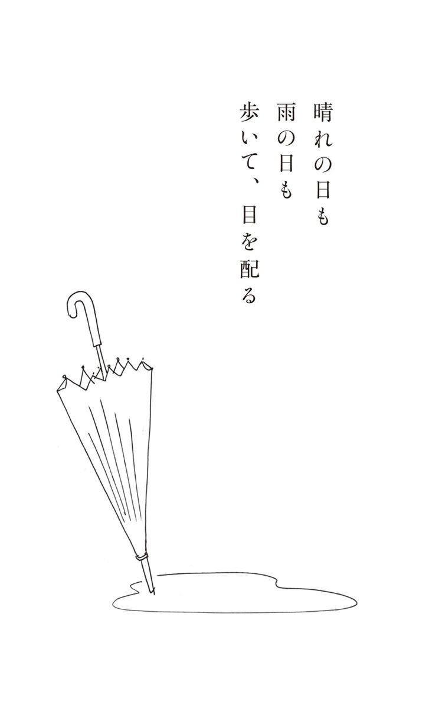
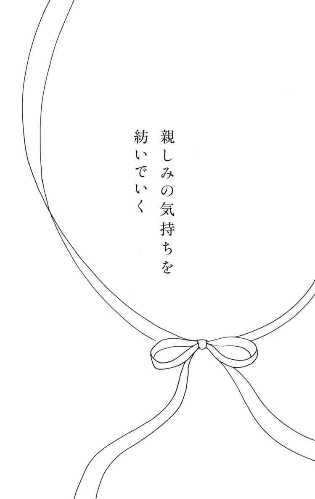

| 人を見る目を持つ | |
| 梅島みよ | |
| (2014) | |
人を見る目を持つ
梅島みよ
本作品の全部または一部を無断で複製、転載、配信、送信したり、ホームページ上に転載することを禁止します。また、本作品の内容を無断で改変、改ざん等を行うことも禁止します。
本作品購入時にご承諾いただいた規約により、有償・無償にかかわらず本作品を第三者に譲渡することはできません。
本作品を示すサムネイルなどのイメージ画像は、再ダウンロード時に予告なく変更される場合があります。
本作品は縦書きでレイアウトされています。
また、ご覧になるリーディングシステムにより、表示の差が認められることがあります。
はじめに
人は産声をあげるその瞬間まで、母親のお腹の中で守られています。年老いて息を引き取るその瞬間まで、家族や身の回りの人に見守られて旅立っていきます。
人はひとりでは生きていけない、集団生活をする動物です。人に支えられながら、人を支えつつ生きています。私自身も、90年という長い歳月の中で、たくさんの人に支えられ今この瞬間まで生きてきました。
だからこそ、「付き合う人を見る目を持つ」ということが、生きていく上で最大のテーマだと感じます。多くの価値観、考え方が混在する中で、相手のことを知り、理解できなければ、人と良い関係を持って生きていくことができません。
そして、「人を見る目を持つ」ことは、自分自身を確実に知るきっかけにもなります。相手がどんな人であるかを知ることは、合わせ鏡のように、自分を見つめ直すことになります。自分がどんな人間であるか知ることによって、人との付き合い方の幅も広がります。
自分自身も含め、人間という生き物は複雑です。「あの人はこうだ」「この人はこうだ」と、断定できるものではありません。時代も人も変化し続けています。だからこそ、周りの人々と円滑に、楽しく、心豊かに過ごすための工夫を、時代を見ながら人を見ることを考えていきたいと思います。
本書の内容は理論的なものではなく、私の長い人生の中で得た個人的な経験を述べました。雑駁な記憶や記録によるものですが、何かのお役に立てば幸せです。
人を見る目を持つ もくじ
人を見るには時間をかけ、手間暇をかけて
delayed decisionという言葉があります。「ゆっくり決める」という意味で、はっきりとわかるまで決めないようにすることです。早く決断することだけが良いとは限りません。早い決断はいかにも賢そうですが、物事には素早く決断するべきことと、ゆっくり決断する必要のあることがあります。
どちらが優れているというのではなく、問題によってはゆっくりと決断することを選び、自分でも考え、人にも相談し、相手の行動を時間をかけて観察してから判断することが必要です。
「呉下の旧阿蒙」という故事成語があります。呉の国にいた蒙という人が、それまであまり賢くなかったのに、３年後には学問にも長け、見違えるほどに変わっていたという話です。人は変わっていきます。人の行動を簡単に決めつけず、その人の変化のプロセスをしっかり眺めるスタンスが必要です。
自分の周りにいる人たちの話をよく聴き、同時に表情や動作をきちんと見て、その人の言動を十分に把握することが必要です。相手がどんな人であるか知ることは、その人との付き合い方の幅を広げてくれます。
相手の言動を把握するためには、あなたの知的な理解力が必要になってきますが、それ以外に、いわゆる知覚といわれる、目、耳、鼻、口、皮膚が捉える感覚も動員しましょう。さらに、あなたの人を見る洞察力、想像力など、すべての能力を使ってその人と向かい合います。そして観察したことを総合し、勘といわれる第六感をも活かして相手を正しく受け止めましょう。
また、その人が周りの人たちと築いている人間関係にも注目します。社内の仲間や上司との関係や、部下への対応、会社の顧客やその他、世間一般の人たちと触れ合う態度、外国の人たちとの付き合い方なども観察対象です。そして、周りの人たちに対する言動を真剣に見ていると、次第にその価値観や考え方に対する理解が進み、あなたの人を見る目は磨かれます。
人間は複雑な生物です。だからこそ人を見るとき、時間をかけずに「こんな人」と簡単に判断しては困ります。人を見るのに急いではいけません。時間をかけて慎重に、そして奥行きのある落ち着いた見方をするようにしたいのです。同時に、相手を見る自分の目も、状況に応じて変わっていくと考えた方が現実的です。
話すよりも聞くよりも聴くことを中心に
最近では、会社内や組織の中で、お互いの意見をはっきり言うことが勧められています。もちろん、自分の意見を話し、相手と意見交換することは大切ですが、それよりも、人の話を「よく聴くこと」や「話を聴く姿勢や態度」がより一層大切です。言葉は自然と耳に入ってきやすいのですが、それが単なる「hear」であっては困ります。
「hear」は、ただ言葉の音が聞こえているだけのことが多く、重要な情報を逃します。そうではなく、心を込めて相手の話の中身や心情などを真剣に受け止めて聴く「listen」であってほしいのです。
その人の話が、どんな背景や原因に基づいたものか、その人のどんな経験を表したものであるかを察し、言葉の行間にあって語られていない思いを読んで、深い洞察をする「listen」には、長い経験と努力と、相手への深い興味が必要です。
話を聴くとき、興味を持って聴くのと、ただ聞いているときの違いは、相手にすぐわかります。話し手にきちんと顔を向けて、その人の目を見て「正体」して聴いている姿は、真剣さが話し手に伝わります。
しかし、この「正体する」という姿勢は意外に難しいのです。話し手と聴き手の間には、机やパソコン、時には携帯などが邪魔をします。職場では電子機器の登場で、落ち着いたコミュニケーションが減りました。部下に指示を出すときにキーボードを叩きながら話をしている上司もいますが論外です。忙しくて「相手に身体をしっかり向ける」という行動ができにくくなってしまっているのでしょうか。
病院でも、「先生こっちを向いてください」と患者が呼びかけたくなるようなお医者さんがいます。患者は自分の顔色を見て診察してほしいので、ちゃんと顔を向けてくれる先生を信頼します。
私の知っているあるお医者さんは多くの患者から信頼されていて、彼は患者が診察室に入ると、立って出迎え、患者の名前を呼んで「お待たせしました」と言って座らせた後に自分も座ります。そういう行動が患者からの信頼につながっていました。話を聴くときの行動や、相手の顔や表情をよく見る習慣がいかに大切なことか、改めて考えさせられました。
「正体」するときも、目、耳、鼻、口、皮膚の五感で相手を見ることが大切ですが、とくに、視覚から入ってくる情報の影響力は大きいです。例えば、ある人の表情が暗く、眉尻が力なく下がり、顔色も悪いと、「何か辛いことがあるのか」と、これから聞く話への心の準備ができます。
その反対に、明るくて身なりが良く愛想も良い、つまり外見が良いと、聞く方も明るい良い話と捉えやすいのです。もし、それがその人の心からの笑顔であれば問題ありません。一概にそうとはいえない場合もあります。中には、計画的に作られた笑顔もあり、読み違いをする恐れもあります。
だから、人の話を聴く際、時折、目をつぶって話を聴くこともいいでしょう。通常、人間の五感の中で一番働いているのは視覚です。目から仕入れてくる情報は、全体の８割を占めるとも聞きます。逆に言えば、人は視覚を頼りに物事を判断しているのでしょう。視覚の働きを意図的に止めることで、人は残りの感覚を活動させます。目を開いているときと閉じているときとでは相手の話す内容が同じであっても、違うことを捉えることがあります。話し手の表情を伺えなくなった聴き手は、聴こえてくる話の声音を頼りにして話の真意を探ることになるからです。
聴き手は話の真実をつかむ力を育てることが必要です。そのためには、人の話の内容を正しく捉えて聴く力や観察力、聴く姿勢などを訓練し、人を見て真実を読む力を育てたいものです。

話したくなる聴き方
話を聴くとき、うなずいて話し手に一息入れるチャンスを作るのは、聴き手の配慮だといえます。話し手にとって大きな安らぎを与えるからです。「うなずき」は、相手の話を聴いている、理解しているという信号のひとつです。とくに、話し手が力点を置いたときや、自分が大いに同意したときに「うなずき」があると、話し手は聴き手の反応を知って励まされます。
中には話を聴いている間に、定期的にうなずく癖のある人もいますが、これは逆効果です。間の悪いうなずきは、「話をきちんと聴いていない」という印象を与え、話し手に不信感を抱かせます。
うなずきだけでなく、言葉で相手を励ますこともできます。例えば、話の上手な人が、面白い話をしてくれたとき、聴いていて楽しく、つい「もっと、もっと」と長話をさせてしまうことがあります。でも話が長くなると、話し手も疲れますから、聴き手は、「お疲れではないでしょうか」とか「お時間よろしいですか」と気配りをして、一息ついてお茶を飲んでいただく手配をし、「有益な話が大変参考になりました」と一言感謝を述べます。
そして手短かに自分の感想を伝え、「勉強になりました」と、一言付け加えるといいでしょう。聴き手から「お話で思い当たることがたくさんありました」となどというコメントがあると、話し手は自分の話が役立ったと喜びます。
ただし、聴き手は話し手よりも長くしゃべってはいけません。また、話し手の会話中に口をはさんだりしないこと。相手の話の腰を折ることになるからです。もう少し聴きたいと思ったときは「今のお話、大変興味深いのでもう少し詳しく聞かせていただけますか」などと相手の許可を得ましょう。
会話というのは一方通行ではありません。話し手ができる工夫について考えてみましょう。話し手の方は、聴き手の表情や相手の身体の動きなどを見て、話に満足しているかどうかを敏感に判断します。
聴き手が話の最中に、目をあちこちに動かしたり、身体を左右に揺らしたりすると、話に飽きてきたなと判断し、話題を変えたり、一旦話を終わりにするなどして、空気を変えるように工夫します。
反対に、聴き手が身を乗り出し、前のめりになって聴いているようなときは、話の内容に興味を抱いている表れなので、安心して話を続けます。目を大きく見開いているときや、話に対するリアクションが大きいときも同じです。
聴き手と話し手の間に温かい雰囲気が通じているときは、大成功です。双方ともそういうことに気をつけて、気持ちのいい会話をしましょう。
声音に込められた想い
話をしているとき、つい力が入って、大声になったり、甲高い声になったりして、その場の雰囲気に合わない声を出してしまうことがあります。その場で他の人々がどんな雰囲気で話しているかをよく見て、自分の声の出し方をその場に合わせる必要があります。
あるとき、老人ホームで、毎朝一人ひとりに「おはようございます」と挨拶をして回るスタッフがいました。明るい声で挨拶していて気持ちが良いのですが、中には「甲高い声でうるさい」と文句を言う偏屈な人もいました。彼女は賢い人らしく、毎日様子を見ていると、声の出し方を少しずつ改善して、最終的には、入室直後はやや低い声で、「おはようございます」と言い、その後相手に合わせて声音を調節するという方法を見出していました。
さらに、耳が遠いおばあちゃんに対しての扱いは見事でした。このおばあちゃんはこれまで誰とも会話をしませんでした。しかし、このスタッフはどちらの耳がより聞きやすいのか見分けて、その耳元で、「おはようございます」とゆっくり挨拶を繰り返しました。
そのうち、今まで応答のなかったそのおばあちゃんが、返事をし始めました。最初の４、５日頃は、しわがれ声で「おはよう」と言いましたが、２週間後ぐらい経つと「おはようごさいます」とゆっくり返すようになりました。
スタッフの声のトーンとゆっくりした発音が良かったのでしょう。そして毎日、にこやかに根気良く続けたことが、おばあちゃんの返答の成果に表れたのです。声音の出し方、話す速度、どこに力を入れるかなど、いろいろ試してみた彼女の工夫と根気に大いに学ばされました。
言葉に乗せられた声音を一番敏感に聴いて、話し手の人柄を読んでいるのはタクシーの運転手さんではないでしょうか。興味津々で運転手さんに聞いてみました。
「あのね、運転手さん、乗せたお客さんが、目的地に着くまであまり話しかけない方がいい人か、それとも、話をした方がいい人かどうやって見分けるの」
「そうですね。乗った前後に何か言葉のある人は話しかけても大丈夫ですね。例えば、『止まってくれてありがとう。東京駅に行って。新幹線に乗るから八重洲口か、日本橋口の方がいいかな』などと言ってくれる人は、話しかけても大丈夫です。
反対に、ぶっきらぼうに、『東京駅』と言い捨てるだけの人はすぐに話しかけない方がいいですね。もっと気をつけるのは、『まっすぐ行って』とだけ言う人です。そんなときは、とにかく走らせて、少し落ち着いてから、『東京駅は丸の内側ですか』とか、『どちらへ』と遠慮がちに聞くことにしています。
でも、一番困るのは酔っている人が『まっすぐ』というときですね。少し走ってからだと、もう半分以上眠っていて、何度聞いても寝ぼけ声で『まっすぐ』と言うだけですからね。乗ったときから酔っていて危ないなと思った人には、眠ってしまわないうちに、『どちらへ』としつこく聞くようにしています」
運転手さんの背中で聴く声への対応の仕方に、「なるほど」と思わず唸りました。声の調子と言葉の言い回しを背中越しに聞いて、判断するのです。声の調子と言葉づかいだけで、後ろの人の人柄や状況を判断するのだから、その勘の良さに感心します。
声は随分たくさんのことを物語ってくれるものです。
相手の本音は背中にある
誰かと話すとき、間をかけないと本音を言わない人もいれば、はじめから打ち解けて話す人もいます。
気難しそうで話しかけにくく、腹を割って話せない感じの人もいるでしょう。でも、気難しい人と決めつけていた人が、その後話してみると、正直で思ったままを言う安心できる相手だったということもあります。そういう人は、慣れてしまえば、案外と共感を得やすく、一気に話ができます。逆に、愛想良くこちらに合わせてくれますが、本音がどこにあるのかわからない人もいます。そのように色々な人がいるからこそ、辛抱強く話を聞くことが大切です。
相手の本音を知る方法のひとつに、話し手の背中に注目するというものがあります。対面して会話をしているとき、人は相手の目に注意を払い、いい意味で緊張し、礼儀も守ろうとしていますが、相手の目から逃れた瞬間に心のゆるみが背中に出ます。
病院での院長回診のとき、その部屋の患者を診療して次の病室に行く先生の背中には、次の患者のことを考えている姿が見えます。今看てもらった患者は不安そうに、「先生、何か一言」と言いたげに見送っています。その部屋を出るとき、院長がちょっと振り返って患者の顔を見て、「また来ますよ」と言えばいいのに、足早に去っていくので、患者はますます不安になります。その院長が、心をその患者に残していることを知らせてくれれば患者は安心します。
就職の面接のときなども似たようなことが言えます。学生は採用面接が終わると、多くの言葉を背中に残します。「一応滑り止めができた」「他が受かったから、ここにはもう多分来ない」といった言葉が背中に見え隠れするのです。去っていく足取りの早さ、視線の高さや肩の張り具合など、言葉に表されなくとも後ろ姿は雄弁に心の中を示してくれます。
世代が違えば違うほど、発見も多い
高齢者の私が20、30代の人に戦争中のことを話しても、本当にわかってもらえるとは限りません。同じ経験をしていないのですから無理もありません。でも、話し手は相手が理解してくれなくても興味を持って聴いてほしいと思っています。
話を聴いて、時に質問などしてくれれば、真剣に聴いてくれたと感じ、それだけで満足します。聴きながらうなずいたり、「大変でしたね」と言ってくれると一層話す甲斐を感じます。質問をされるのも話し手にとっては嬉しいのですが、聴き手の質問が長くなりすぎると、話の腰を折られたように思うので気をつけましょう。
今、戦争を扱ったドラマなどを見ても、戦争を体験した戦中世代の「怖さ、恐ろしさ、命を脅かされる震え」を若い人が感じ取るのは難しいでしょう。説明を聞いてもその怖さは伝わりません。感じろといっても、体験が伴わないことには感情にまで思いが届きません。時代は生き物ですから、日々激しく変化します。
例えば２０１４年に卒寿を迎えた私は、神宮外苑といえば「学徒出陣」を思い出します。今まで学生だった若者が、明日は戦地に赴くかもしれないと震えました。しかし、若い人たちにとって外苑は、前の東京オリンピックか、来るべき２０２０年のオリンピックの壮大な会場のことしか思い浮かばないかもしれません。
若い世代と中年や年配者が話をするとき、若い人たちは年上の人たちが生きてきた時代を想像して話を聴き、反対に年配者は、若い人たちの言葉や今の時代の動き、考え方を知る努力をして、お互いの発見を楽しみたいものです。
年上の世代は「今の若い者の考えていることはわからない」と言ってしまうのではなく、「あなたたちの考えを説明してほしい」と頼む必要があります。
また若者は「どうせ聞いたって理解できない」と言わず、「もっと詳しく説明してください」と聞いてくれれば、年配者はそれなりにこれまで蓄えた知識や知恵を動員して相手がわかってくれるよう努力して話します。
年配者は若い人たちを「ゆとり世代」「さとり世代」と言って軽く見る傾向があります。しかし、彼らは時代とともに育ち、その時代の変化が起こったプロセスを通って成長しています。年上の人たちもそれを理解して、若者と話せば、これからどんな変化が起こってくるかがある程度予測でき、良い相互教育になるのではないでしょうか。
今の時代は、新しい言葉が次々と生まれています。その言葉の意味や由来、発生の理由なども、若い人と一緒に研究すれば、双方ともに新しい発見につながり、それぞれの世代の特徴や行動について、相互に知ることができるはずです。

急な仕事を頼まれたときの受け応え
人の中で穏やかに暮らすためには、人に対する基本的なマナーの知識や行動、そして相手を気づかう姿勢が必要です。相手に対する尊敬の念を表し、その人がしてほしがっていることを察して気づかいをし、快い人間関係を作り、信頼を得るようにすることを大切にしたいものです。
キリストはマタイ伝の山上の垂訓で、「自分がされて嬉しいと思うことは人にもしてあげなさい」と言っています。また、孔子が弟子の子貢に説くときは「自分がしてほしくないことは人にするな」と言ったそうです。
驚くべきは洋の東西の２人の賢人が同じことを表からも裏からも言っていることです。他人に対する細やかな配慮です。そういう気づかいは、結局のところ、その人の気持ちをよく推察して、その人がしてほしいことをすることなのです。
職場では同僚や先輩、その他みんなと良い人間関係を作って、お互いに協力してひとつのチームとしてその部門の目標を達成することが重要です。一緒に働く人々には、男性も女性も、同期の人も、先輩や後輩も、そこに長くいるベテランもいます。最近入社したばかりの若い新人もいます。
それらの人々が、それぞれ自分の担当する仕事を持っています。みんなが気持ち良く働けるように、各人に対するマナーに気をつけ、相手に適した言葉づかいに心を配り、お互いに協力して居心地の良い職場を作りましょう。
時々起きるトラブルは、仲間のＡさんが上司から大急ぎの仕事をするように言われ、焦って「今急いでいるのよ、手伝って」とＢさんにいきなり頼むときなどです。Ｂさんも急ぎの仕事を持っているときに、「私も急ぎの仕事を頼まれているから無理」と、すげなく断ってしまうと、チームの協力はうまくいきません。
問題はそのときの説明の仕方です。「ごめんなさい、私も今、上司が急ぎだと言って頼まれている仕事があって、これは後20分ぐらいで終わるから、それからでもいいでしょうか。それとも、同僚に頼みましょうか」などと、相手の急ぎの用事を何とかして助けたい気持ちを表します。
一方、頼みにきた人が「それでは困る」という場合があります。Ａさんの困っている状況がわかったら、ＡさんとＢさんのチーム・ワークの始まりです。「では、今私のやっている仕事の依頼主に、20分遅れていいか聞いてみます」という親切もあるでしょう。しかしそれも無理なら、職場の仲間たちと話して協力し合うことにもなります。
職場ではみんなそれぞれ、自分の担当する仕事を持っています。本来なら、一人ひとりの職務分担が決まっていて、職務内容が明確で、それを達成することがその人の任務です。
ところが総務、庶務、経理などのように、みんながデスクワークをしている部署には、社内、社外の人から、前述したような突然飛び込み仕事を頼まれることがよくあります。だから、各自が自分の仕事を計画立ててやっているところに、早口でせっかちな先輩や同僚、あるいは他の部署の人から、「急いでこれをやってください」といろいろな急ぎの仕事が飛び込んできます。
頼んでくるのは、大体、男性社員や少し年上の女性社員、あるいは日頃親しい同僚、そして、時には上司です。
多くの場合、依頼者は急いていて「今、会議で急に要るようになったから、コピー50部、一つひとつファイルに入れて、できたら会議室へ持ってきて」などと言い捨てて置いてしまうことが多いのです。その他に「ちょっと一緒に来て」とか、「これやって」と何の説明もなしに書類を置いていく人や、要望だけ伝えてくる人もいます。
依頼者は、「相手は何をやればいいのかわかるだろう」と思って、説明なしに持ってくるのでしょうが、もらった人がわかるとは限りません。とにかく、まず読んでみる、見てみる。わかれば、そして、そのときできればすぐやりますが、それが当たり前になると、相手は常習犯になってしまいます。
物を頼む前に、「今、いいですか」と、話の前後にクッション言葉がない人には困ると、ある気のいい総務の女性が悩んでいました。「もちろん、ちょっとのことだからと、やれるときにはとにかく受けます。でも、そういう頼み方をする人は、説明が雑なことが多いのです。多分その人は仕事がたくさんあって焦っているので、相手のことを考えるゆとりがないのでしょう。そういう人が多いのです」と、グチを言っていました。
でも、そういう頼み方をする人ばかりではありません。「今、ちょっといいですか」と言って、こちらの仕事の状況を聞き、頼む仕事の用件を話してくれる人もぃます。そういう人には、こちらも気持ち良く「かしこまりました」といい、仕事ができます。
話の前後にそういうクッション言葉のある人は、相手をよく見ているタイプです。そういう人には、こちらもキチンとした仕事をしてあげましょう。さもないとこちらの能力をハッキリと見抜かれてしまいます。
教え方を教わってこなかった人
もうひとつ困るのは、依頼者が頭のいい人で、本人は少しの説明でわかるため、他人もそうだと思い、簡単な説明で「わかったな」と言い捨てて行ってしまうときです。私の部下で過去にそういう人がいました。私は彼女に、「あのね、あなたは頭が良いから少しの説明でわかるけど、そういう人ばかりではないの。丁寧に話さないと、飲み込みに時間がかかる人もいるから」と言うと、「わかるように言っています」と弁解します。
頭が良くキャッチの早い人は、そうでない人のことがわかりません。「理解が遅い人でも、十分に話して理解してもらえば、かえって確実な仕事をします。手間を省かず、話すようにしてやりなさい」と言うのですが、人の癖はなかなか治りません。人に何かを頼むにも、相手の反応をよく観察して、その人の理解度に合わせることが大切です。
逆に、こうした依頼主から仕事を頼まれたときは、しっかりした対応をして引き受ければ安心し、あなたの評価も上がります。
ビジネスパーソンは、急な頼まれ仕事でも、機転を利かせていい仕事をする必要がありますが、できるのか、できないのか、いつまでならできるなどがはっきりしない人は困ります。それが明確だと信頼されます。
職場内のチームワークがいいこと、他の部門とも良い人間関係を保つこと、各自がしっかりした仕事をすることが、信頼される職場を作ります。
普段の言葉づかいの中に、人はあなたの気配りを見る
職場内には、気楽な同年輩の人もいれば、先輩もいれば、後輩もいます。日常の言葉づかいでも、尊敬語や、謙譲語、美化語を使わなければならない場合もあります。ましてや、お客様や上司からの電話に対し、相手や状況によって敬語を自由に使い分けができなけれは、仕事をする上で困ります。
いくつかの例を述べておきましょう。例えば職場にお客様がお見えになり、名刺を出し、「○○でございます」とおっしゃいますが、その名刺を受けた人が「○○様でございますね」と言うことがあります。これは「○○様でいらっしゃいますね」と言わないと尊敬語になりません。
電話で外部から「○○部長さんはいらっしゃいますか」と聞かれて、「部長の○○はただいま、外出しております。３時には戻る予定ですが、戻り次第、お電話するようにいたしましょうか」などと先方のご都合を聞きます。
そして、先方の会社とお名前を「○○社の○○課の○○様でいらっしゃいますね、総務の田中が受け賜りました」と復唱し、責任の所在を告げます。こういう言葉が落着いてスラスラ出ると相手は安心しますし、ちゃんとした敬語と謙譲語の使い分けをしていることをわかってくれます。
ところが、この頃は、変な商業敬語が流行って「召し上がってください」と言うべきところを「お召し上がりください」などと言います。我が家のペットに「餌をあげる」と犬に敬語を使う人もいます。敬語と謙譲語の基本を、相手の立場と連動して正しく使うように心がけてください。
相手が派遣社員や契約社員に対して、自分が仕事を指示する立場であっても、その人が年上ならば、人生のベテランへの敬意として、丁寧語や尊敬語を話すように気をつけます。社会人としての、人生の先輩への尊敬の念を示すのです。そのように考えると、人に対する言葉づかいというのは、基本に加えて、人に対するあなたの気配りを見たり見られたりする場でもあるのです。
やりたいことは次第に見えてくる
職場では、自分に与えられた仕事がありますが、それが入社前に自分が期待したようなものであるとは限りません。
あれをやろう、これをやろうと、将来の専門家を目指していたのに、毎日の仕事はあまり頭の要らない雑用で、「私はこんなことをやるために、厳しい採用試験を通り抜けてここに座っているのか」と悲しくなったりします。その仕事が職場に要らないというわけではありません。でも、私でなくても、誰でもできる。そのような仕事ばかりやっているのでは、能力が育たないし、専門性も身についていかない。そんな気持ちで人は焦ります。
しかし、そういう雑用を毎日コツコツこなしているうちに、その職場の全体の職務がつかめてきます。
自分の部署はどのような仕事をしていて、自分がやりたい業務を担当しているのはどの部署で、それは自分の部署とはどういう関係があるのかなど、会社の諸部門の役割や位置づけがわかってきます。自分が将来、専門職を目指すにはどこの部署がよいのか、そこではどんな能力が要るか、自分の希望を抱き続けるとしたら、どんな勉強をしたらいいのかなど、具体的につかめてきます。
その頃になると、これまである専門職につきたいと思っていた気持ちが変わっていることもあります。まだそれでも何かの専門職を望む気持ちが続いていれば、その目標の職場の人と知り合いになったり、勉強の方法を聞いたり、何かと教わったりしていると、いつか願いが叶う機会が訪れてきます。
反面、与えられた部署で、雑用だと思いながら仕事をこなしているうちに、さらに広いビジネスの分野に視野が開け、新しい目標が見つかることもあります。長い自分のキャリアを選ぶのに、焦ることはないのです。日々、淡々と仕事をこなしているうちに、これは面白そうだ、自分に向いていそうだ、どうも自分はこれを好きになりそうだ、などと思う仕事に出会うこともあります。
現に私がそうでした。仕事のはじめは米軍のオフィサーズ・クラブの受付と顧客管理でしたが、早口で短気な米軍の将校との電話のやり取りがうまくいきません。私にはこの仕事をこなす能力がないし、また続けていても英語だけはましになるかもしれませんが、何か蓄積できるノウハウを得るのは無理だと思いました。仕事の出来も悪かったので、辞めるといったら、上司は止めませんでした。次に事務職になりましたが、どうも食い足りません。
そこへ友人が司令部の情報部へ呼んでくれました。ここでの仕事は、新聞記事の分析と、統計、それらのデータを見て米軍占領下の世論の傾向を読む仕事でした。上司は、情報分析の仕方を詳しく教えて育ててくれ、やり甲斐があってその仕事を毎日楽しんでやっていました。
ところが、あるとき人事部から素晴らしい言葉で口説かれました。「君は情報部の仕事を実によくやっている。しかしあれは司令官の目であり耳であり口となる仕事だ。自分自身の声でマネジメントを教える仕事をやらないか」
この殺し文句に心を動かされ、管理者教育の仕事に興味を抱き、上司にも相談して転籍を決めました。この仕事が性に合っていたのか、それに集中し、ついに生涯の仕事になりました。考えてみれば運が良かったのです。しかし、この仕事を「自分のキャリアにしたい」と決めたのは、いろいろ体験し、時間をかけてやってみてからです。
焦らずに、雑用でも気に入らない仕事でも、やってみるうちに、「これがやりたい」と思うことが出てくるのです。
大学を卒業したタイミングで自分のキャリアを見通すことはできません。大学生が卒業後すぐに会社に就職しても自分のやりたいキャリアは見つかりません。考えようによっては、高校生は卒業後すぐ大学に行かないで、３年間くらい社会に出て仕事をした方がいいと思います。
そうすれば世の中を覚えます。自分はこういう風に生きていきたい、というのが具体的な形になってから大学に行かないと、本当に何を学んでいいかわかりません。
仕事をやってみないと自分は何が好きかもわかりません。自分に何が向いているのかは、それをやり続けてみて初めてわかってきます。あれもできます、これもできますと思うより、今は苦しくても色々やっているうちに本当に好きだと思うことができて、それを追いかけていくことがいいのです。
「くれない族」にならないように
「職場のお仲間に、こうしてあげたらいいかもしれない」と思ったら、ためらわず行動します。相手の人の仕事にプラスになると思っても、それがプラスになるかどうかわからなければ、失礼にならないように相手に尋ねます。
例えば、「今日読んだ本に、こんな文章があったんだけど、あなたのお仕事の参考になるかもしれないと思ってコピーしました。よかったらどうぞ」と言って渡します。
仲間の人たちに、まず自分から進んで何かしてあげること。書類の提出などでも、「私は今、出してくるから、ついでにあなたの分も一緒に持っていきましょうか」と、仲間がラクになるように、さり気なく手伝います。仲間が忙しそうなときには「今、私は手が空いているからお手伝いしましょうか」というのもいいでしょう。
まず人様のお役に立つことを考えれば、気持ちがいいし、いつかあなたが助けてもらうことになるかもしれません。「お節介な」と思う人がいるかもしれませんが、あなたが、素直に相手に役立ってあげたいと思っていれば、それは相手に通じます。
そして、それを繰り返すことで、相手が何を欲しがっているか、何に困っているか、どういうものを好んでいるかということがわかるようになります。
反対に、「私には何も言ってくれない、教えてくれない、何にもしてくれない、知らせてくれない」などと、愚痴を言う「くれない族」がいます。「くれない族」は不幸せです。世の中は、ギブ・アンド・テイクですから、まずは進んで相手のために役に立つことをしてあげること。
もしあなたが「くれない族」的な気持ちになったら、自分に聞いてみます。「なぜ私には教えてくれなかったのか。私にどんな問題があったのか」と。
今、あなたに提供された情報への目の通し方が不十分だったり、人の話の聴き方が不足していたり、仕事に関することや、職場の動きに関する事への感度が甘かったりしているのかもしれません。多くの場合、原因は自分にあります。
信用を貯金する
どんな仕事をしても、前置きと報告が行動の前後になくては、物事は完結しません。
「○○さんのところへこれを」というような簡単な指示でも、指示を受けた人が「では、行ってまいります」という挨拶なしに出かけてしまい、「あれ、もう行っちゃったのか、もうひとつ、頼むことがあったのに」と言っている先輩をよく見かけます。帰ってきたら、「ただいま戻りました」と報告し、もし先方からお礼や伝言があったら、忘れずに報告します。仕事の前後に挨拶と報告がなかったら、やったことにはなりません。
よくあるケースですが、「○○さんを紹介してください」と頼まれて紹介をすると、こちらはその後どうなったか心配しているのに、何の報告もなく、逆に先方から「この間あんたのところの人が来てね、こんなことを言ってたよ」などと言われて恐縮することがあります。
仕事を頼まれたときは、「これからやります」「済みました」と前後の報告を行うこと。また、誰かへの紹介を頼んだりしたときは、「いつお目にかかります」「行ってまいりました。こうでした」など、前後の前置きや締めくくりがないと、やりっぱなしの人になってしまいます。そんなことがあると、もうあの人には頼めない、人も紹介しにくいと思われてしまいます。
逐一連絡を入れることで、一緒に仕事をしている人から信用が得られます。「ホウレンソウ」という言葉があるように、報告、連絡、相談がその都度できない社員は、それだけで失格です。
前置きと報告がきちんとできる人はビジネスの信用を得やすいので、まわりに人が集まります。あなたを知り、好意を持って応援し、相談に乗ったり、アドバイスをしてくれる人がいれば、たくさんの応援団を持っているようで心強いです。
最近は昔に比べて、ビジネスでのそういう人間関係が薄くなっているかもしれません。しかし「あんたが言うなら」、とか、「君が頼んでくるなら」と言って、信頼し任せてくれる人には、その人と会うことだけでも楽しく、仕事をする元気が出ます。
そういう人脈は、会社の顧客との関係だけでなく、社内の同僚や上司、あるいは他部門の人や、社外の友人でも同じです。あなたも相手の役に立つことをいつも考えて行動すること、約束を守ること、人との信頼関係を築く努力を怠らないことです。
仕事のコツは耳学問で覚える
職場では同僚や先輩が、仕事のコツを教えてくれます。どんな小さなことでも、みんなの経験が蓄積されたもので、それを、こちらは耳学問でラクして勉強させてもらうのですから、しっかりと心にとめて、良い聞き手になることが大切です。
話を聞いてみると、思い当たることがたくさんあるでしょうし、全く気がつかなかったこともあるでしょう。そのとき感謝のコメントをはさむと、話し手は、話してやってよかったと、思ってくれます。
仕事のことで初歩的なことでも聞くのが恥ずかしいとか、笑われはしないかなどと心配せず、わからないことがあれば積極的に聞くことです。経験は、時間によって蓄積されるので、先輩はどんな小さなことでも聞かれたら自分の経験を後輩に教えると、本人の成長にも役立ち、会社のみんなの成長にも役立ちます。
私も入社当時、先輩からいろいろ教わりました。「上司に書類を提出するとき、読みやすいように揃えて、ホッチキスは右上の角に斜めにキチンと止めること」とか、「○○部長は几帳面だから机の上を綺麗にして、未決や既決書類のトレイの中も、書類を乱雑に置かないこと」など。
また、「○○先輩と同行するときに、待ち合わせをするなら、あの人は必ず10分前には行くからそれより少し早く行きなさい」と先輩や上司の癖を教えてくれ人もいました。
さらに、「今日お見えになったのは、三菱系の会社の方だよ。会社にいらした方の出身や、どこの財閥系の方か、その子会社か、どんな業務を担当する会社の方か、その会社の風土はどんなものか、そんなことも日頃から、先輩に聞いたり、自分で調べたりした方がいいよ。その会社の気風を知って、応対の仕方もそれに合わせなさい。仕事の知識以外に、そういう周りのことを覚えていると、仕事に活かせるよ」。そんなことも教わりました。
先輩のビジネス経験による教えは、またとない耳学問です。
人の印象とは、その人が去った後の余韻
印象に残る人というのは、その人の持っている持ち味がはっきりしていると思います。印象は事後に残るものであり、その人の去った後の空気であり、それが人の心の中に残る余韻で、その人が来たお陰で自分の心が緩んだり、楽しかったりするものです。つまり、その人が去った後の残り香です。だから、去った後に良い空気を残していける人になりたいですね。
ユーモアのある人も、そのひとりです。ユーモアとは、ただ単に面白いということではなく、その言葉で相手が、あるいは周りの人がほっとするのです。心が緩むのです。ユーモアを身につけるためには、落語や歌舞伎など遊芸を見にいくのもいいでしょう。今の時代はビジネス、ビジネスと言いすぎて、それらを遊びとしか思わない傾向がありますが、これは無駄なことではなく、心を養うものです。
我が家の庭で作業してくれていた植木屋さんと話したところ、彼は華道も茶道も習っていました。彼が言うには「庭に植木を入れると、３坪が５坪に見えるんだ。景色というものは障壁を入れることによって、風景に幅が出る」というのです。これを聴いて、なるほどと感心しました。空間の見せ方まで考えられるのは、彼が多方面の教養も身につけていたからでしょう。
外国などでみんなが集まるパーティーでみんながくつろいだ空気のとき、興にのって進み出て、ピアノを弾く人がいます。それによってその場を楽しくしてくれるのです。坂本龍馬は二弦琴だったかと思いますが、よく弾いていたそうです。案外、昔の武士は遊芸のたしなみが深かったのでしょう。
今はそういうゆとりがないように感じます。戦後の国土建設の苦しさの中で、貧乏でゆとりがなく、生きるために、食うために必死だったので、みんなが楽しむ心をもつ時間が足りなかったのでしょう。
多くの人の中に話が楽しくて、ユーモラスで、そのうえ言葉のキャッチが鋭い人がいます。ちょっと言った言葉が光る人には感動させられます。ある会社のトップがさまざまな会社を傘下に治めたときに、社員に「ゆるい縄で縛れ」とおっしゃいました。このフレーズには感動しました。わかりやすく、中身がしっかりとして、聴く人がまっすぐに理解できる、そういう寸言を言うことのできる人の知恵を学びたいものです。
話し手の視点
最近は、商品の売り込みでも、私たちのようなコンサルタントのプログラム紹介でも、各社はそれぞれプレゼンテーションをするように求めます。こういう場面では、パワーポイントなどを使って、わかりやすく、見やすく行い、なおかつ聴き手の反応を観察し、先方のニーズをできるだけ多くつかまなければなりません。
聴く人の表情、動作、動きを見て、どこに興味を感じているか、自分の発表に飽きているか、話の転換をどうするか、などの判断が必要です。前もって詳しすぎるメモを用意すると、それに固執してしまいますから、せいぜいメモ程度に大きな字で書き、全体は頭の中に入れておき、話の骨子を忘れそうな危険なときだけチラッと見る程度にします。
大切なのは聴き手の動きや反応、出される質問です。とくに、質問内容から、聴き手が何に対して興味を持っているかがわかります。
相手が大人数でも、一人ひとりに話しかけるように各人の顔をしっかり見つめます。大人数だと、つい全体を万遍なく見て話しかけがちですが、それでは誰に対して話しているのかわからないし、聴き手も意識が甘くなります。
大人数でも相手の一人ひとりに目を合わせて話すと、聴き手は、自分に話しかけられていると感じ、真剣に聴いてくれます。
ちゃぶ台を通して見えてくる世の中
昔と比べて、家族が一緒に食卓を囲む回数が少なくなりました。父親は早い出勤なので、ひとりで朝食。大きい子どもも学校が遠いからひとりで食べ、母親は小さい子どもと食事、などが朝の風景です。もちろん、昼は別々。夕食は全員が揃う家もありますが、父親は仕事で遅くなり、中高生や大学生は塾やその他の集まりで、揃いません。
結局、家族全員でよもやま話をして、浮世のルールを知り、人々との付き合い方や人を見る勉強をするちゃぶ台教育が少なくなりました。両親の他人に対する見方、世の中や隣近所との人間関係の維持の仕方なども、食卓で自然と聞いたり覚えたりするチャンスが最近は少ないのです。
しかし、社員は会社に属した瞬間から社のイメージメーカーとして、品位を持って行動し、会社を表現する行動や姿勢を求められます。ビジネスに優れているだけでなく、立ち居振る舞いが、幼い頃から躾が身についている社員は、会社としても安心です。
女性コンサルタントは新入社員にマナー教育をするように求められますが、最近は部下管理をするマネジャーが、部下にマナーを正しく教えるために、指導者としてマナー教育の指導法を研修するように期待されることが多いのです。
電話の受け方、敬語の知識、来客応対、部屋の中の座る席順の案内、パーティなどの座席の選択などから始まって、手紙の宛先や立場と名前、表書きの書き方、あるいはメールの文章と手紙の文章の違いなど。携帯電話やスマートフォンの使い方など、新しい通信機器が出てくるたびに、それに関する知識やマナーの要求範囲が増えて、ビジネスで求められるマナー行動の範囲が広がってきました。
それに加えて、商談の際に示される教養や、ユーモラスなコメントの巧みさまで求められるとなると、ビジネスパーソンの勉強は、今後はもっと幅広く続くことになります。こうした勉強をちゃぶ台で覚えられなくなったのは残念です。
部下を信頼する勇気
職場で先輩社員やベテラン社員は、後輩や若い人たちに仕事内容を教えたり、困ったときは助けたりして頼られる存在です。しっかりした中堅社員や若手リーダーがいると、みんな安心して仕事に取り組み、温かい空気のある職場になります。
そういう空気を作るのがマネジャーの仕事です。
毎日、部下の一人ひとりをよく見て彼らのちょっとした変化にも気づき、チームの様子を見ます。
みんなが元気に働いていればいいのですが、どうも今日はＡさんの顔色が悪い。それに彼は、この頃あまり元気がなく、笑顔も少ない。何か心配事があるのかな。それに残業も多いようだ、仕事が多すぎて困っているのかな、社内の問題で悩んでいるのかな、などと、部下各人の健康面、家庭内の問題、仕事量や処理能力の変化など、幅広く注意し、考えを巡らせ、部下の状況に配慮します。
そんなマネジャーの管理下なら部門の業績も上がるし、部下も安心して働けるでしょうが、すべてのマネジャーがこんな行動をしているとは限りません。中にはマネジャーになったことを重荷に感じたり、これまでどおりの仕事だけをこなしていたい、「仕事のプロではありたいが、マネジャーなんかやりたくない」という人もいます。
そういう人の特徴にありがちなのが、仕事を部下に任せられず、つい何もかも自分でやってしまうことです。
その点を指摘されると、「部下に任せると良い結果が出ないから、つい自分でやってしまう。その方が早いし効果的だ」とか「あの仕事は複雑で経験が要るから、すべてを部下に任せるのはリスクが大きい。はじめは私がやって、彼に少しずつ手伝わせ、私が教えながら彼と一緒にやり、だんだんできるようにするのだ」などと言い訳しますが、これはその人の決断力のなさの言い訳です。これでは部下も、自分は全く信頼されていないと感じて、やる気がなくなります。
部下の方は、「自分も、あの仕事をマネジャーと一緒にやったんだから、もうできる。任せてくれればやれる。自分ひとりでやりたい、それに、自分で新しい工夫をして、よりよい方法を考え、顧客のニーズにも応えたい。多分、マネジャーよりもうまくやれる」などと思います。
これは、部下の背伸びをした姿なのかもしれませんが、ここがマネジャーの決断のしどころです。「あの部下は、まだ心配だ、顧客も苦情を言うかもしれない」と心配になっても、「そのときは自分が謝って尻拭いをしよう」と決めてください。
いつまでも自分で抱え込んでいたら、部下は育ちません。「あのマネジャーは部下に任せられない人だ」と部下の不満を招きます。
「あんたならやれるよ。大丈夫。全力でやってきてくれ。失敗してもいい。骨は拾ってやるよ」ぐらいの啖呵を切って励まし、「でもちゃんと準備してやれよ」と少し脅かしながら任せます。部下はやる気になって、本気で勉強して仕事に取り組むでしょう。そのように部下を元気づけ、仕事を任せなければ、スタッフは育ちません。そして、スタッフが育たなければ、組織の強化もありません。
顧客満足のための教育プログラムは、顧客満足の重要性を説きますが、その前に、その組織の従業員の満足がなければ、顧客を満足させる組織にはならないのです。つまり、マネジャーとして部下に働き甲斐を感じさせ満足させることが、結果として顧客満足につながり、そして部門の業績向上になるのです。
部下の一人ひとりをよく見るマネジャーのもとでは、部下は安心し、上司を信頼して働くでしょう。マネジャーの部下に対する信頼があればこそ、部下は日々の仕事に満足して、やりがいを持って働くようになり、社外の顧客やその他の人々から支持される組織になります。マネジャーの仕事は心労の多いものですが、その会社の根幹を支える意義ある仕事です。
「自分でやった方が早い」と思い始めたらマネジャー失格
前述したように、マネジャーの中には、何もかもひとりで引き受けて働き、その分、部下に任せない人が少なくありません。反対に、部下に任せるが、その人はどちらかといえば任せっぱなしで、そのための指導や教育も不十分で、部下は苦労するし、成果も良くないというマネジャーもいます。
理想を言えば、マネジャーは、部門の目標達成と部下育成のために、部下教育をし、能力を見て評価し、彼らを成長させるために、それぞれの仕事に適材を選んで適所につけ、指導をしながら序々に任せていくべきです。
ところが、上司の中には、任せた場合の失敗を恐れすぎて、何でも自分でやってしまい、それでいて、「忙しい、人が足りない。もっと採用してほしい」と言っている人がいます。そういう部門は、いくら努力しても、なかなか大きな組織には育ちません。
そんな人を見て私は、幼い頃に読んだイソップ物語を思い出しました。烏が壺の中の水を飲みたいが、水面までくちばしが届きません。そこで小石を一つひとつ拾ってきて、壺の中に落として、結果、水面が上がって烏は水を飲めたというものです。
部門の人員が足りず、マネジャーがひとりだけ忙しくて、結果、目標達成ができない。人員を補充したくても、上層部は人員の採用に応じてくれない。部門も大きくならず、目標もあまり大きく掲げることはできない。マネジャーがひとりで頑張っても、部員の顕著な成長はない。では、１つでもいいから小石を拾ってきて足すか、既に壷に入っている石を大きくして水面を上げることが必要でしょう。石が大きくなれば水面は上がるし、１つずつでも、順に小石を入れれば水面が上がって水を飲めます。
つまり、現実的に言えば、部下に少しでも仕事を任せて、彼らの能力が上がれば、目標達成に近づくということです。目標が少しでも大きくなれば、会社も少しは人員の採用を認めてくれます。大事なのはマネジャーが部下の能力を育て、仕事を少しずつ任せて指導し、部門の業績を上げることです。そのようにして自部門の強化を図っていけば、部門も成長します。
現在のような、景気の不安定な時代に、マネジャーとしても、部下に仕事を任せるには度胸が要ります。だから何でも自分でやるマネジャーが多いのでしょうが、部下は不満です。任せてくれない、やらせてくれない、自分たちを信頼していないのか、など思います。
今の時代、マネジャーに必要なのは、若い部下とよく話し合うことです。信頼し、リスクがあれば支援し、度胸をすえて任せることです。
良いマネジャーは足で歩いて人を見る
以前、あるマネジャーから教えられたことがありました。彼は朝、だれよりも早く出勤して、自分の部門がある４階まで、エレベーターを使わず、１階から２階、３階と各フロアに顔を出して、明るく挨拶をし、やっと自分の部署に落ち着くのです。
終業時は自部門の部下たちに、あまり遅くならないように促し、みんなが帰ってから、また階段を歩いて各階の様子を見てから帰宅するとのことでした。
彼は、「そうすると何となく会社の雰囲気もわかるし、自部門が他部門と連絡するにもやりやすいよ」と言っていました。「それに、歩くから運動にもなる」とつけ加えました。
彼の話に感心していたら、米国の提携会社、ＤＤＩ社のバイアム社長のことを思い出しました。彼も非常に早起きでした。朝５時に起きて身支度をし、朝ご飯を軽く食べて、７時には会社に行きます。私は米国出張時はいつも彼の家に泊っていて、お陰で朝寝坊の私もこのときばかりは彼に合わせて早起きします。７時になると「みよ、行こう」と呼ぶので、彼の車に同乗し会社に向かいます。
ある日、彼はまず、地下室で資料作成などをやっているオペレ─ターの部屋に行きました。そこは女性社員が多いのですが、彼はいつ用意したのか、「おはよう」の挨拶とともに、その日の誕生日の人たちに、自分のサインの入った「誕生日、おめでとう」のカードを配って握手しました。みんな大喜びです。その他のフロアでも、若い社員たちに同じように誕生日のお祝いをします。
博士に「いつもこうするの？」と尋ねると、「全員は無理だけど、入社年数がまだ若い人たちを中心にしているよ。そうしてみんなの顔を覚えるんだ」と言っていました。これも足で歩くマネジャーの工夫です。
同じような思い出はもうひとつあります。知人のホテル・マネジャーが本社から、少し離れた観光地の支店のマネジャーに転籍しました。その支店は社員が５００名ぐらいで、開設当時は景気が良かったのですが、その後、業績があまり上がらず、彼は立て直し役として任命されたのです。
任命後に彼がやったことのひとつは、バイアム博士と同じように、誕生日カード作戦でした。社員５００名の一人ひとりの誕生日に、自筆でコメントを書いたカードを作り、彼らの職場を訪れてそれを手渡したのです。１年、２年と続けているうちに、その支店の業績は向上し始めました。
もちろん、彼の支店管理の目配りは全般に渡っていたので、カード渡しのお陰だけで業績が上がったのではありません。
しかし、彼の説明によると、「社員の顔と名前を覚えられるし、これまでの彼らの仕事歴もわかる。おまけにカードの返礼に、みんなから礼状とともに各人の仕事の様子や悩み、部下たちの働き方をアイデアも聞けて、部下たちの働き方を理解するのに大いに参考になった」とのことでした。５年間の任務で、支店は業績も上がり、彼はまた本社に呼び戻されました。
まさに手を使い足で歩く、情のあるマネジメントを行ったことの参考例として、心に深く残りました。
マネジャーの仕事は、部門の目標達成、業務管理、社員の採用や育成、新規の事業の開発や顧客の獲得、他部門との連携などと幅広いのですが、支店長の情のある行動で、部下に働く喜びを与え、働く人たちのチームの和を強化したことは、極めて大きいことだったと思います。

マネジャーの能力が見える採用・評価の仕方
マネジャーの仕事のうち、社員の採用決定と評価は大きな課題です。
これまでの少ない私の経験によると、人材育成・アセスメントの会社を始めてまもない昭和43・44年頃になると、経済状況も向上し、企業は社員の採用を増やし始めました。
その頃はまだ、女性社員はほとんどが結婚までの勤務で辞めたので、企業は男性社員より女性社員の数を多くとることになり、お陰で女性の新入社員教育の注文が多くなりました。
我が社としても男性講師だけでなく、女性講師も増やさなければなりません。男女とも、講師は若くても困るし、企業で働いた経験がないのは困ります。そこで採用基準を男性は35歳以上、女性は28歳以上としました。人材育成・アセスメントという職業の特性上、講師はある程度の人生経験が必要とされるからです。
既存社員が「この人なら一緒に働きたい」と思う人が欲しいので、採用は若い人にも混じってもらい、履歴書の判断は若い人たち、１次面接は中堅先輩やリーダー、２次面接は部課長、最後が役員としました。
さらに面接の場だけでなく応募者が待機している部屋にも応募者の行動を見る人を２人ほどつけました。
会社が小さいから一度にたくさんの人数は取れません。一度には２・３人の採用としました。
そのあと、米国のＤＤＩ社から、人材の能力評価のプログラムである、ヒューマン・アセスメントを導入したので、練習もかねてまず我が社で使おうと、講師向けの能力評価要件を作り、それを観察する演習課題も決めました。
演習課題はあまり多すぎないように、書類処理分析（インバスケット処理）、面接演習、グループ討議、市場の状況分析と発表、と４種類にしました。
講師の能力要件としては、次の８つの基準に決めました。
①影響力（参加者が感じる第一印象の良さと迫力）
②熱心さや力強さを表す（バイタリティ）
③さまざまのストレスに耐える（ストレス耐性）
④参加者の心情や周囲の状況を感知する（感受性）
⑤物事の理解に富む（理解力）
⑥会話や対話、相手の言い分を受けて話を進める（コミュニケーション力）
⑦提示された問題を分析し、判断する（分析判断力）
⑧プログラムを設計し、研修を展開して成果を収める（計画組織力）
初めてのヒューマン・アセスメントの実施です。講師はアメリカに行って勉強し、国内でもブレイ博士やバイアム博士と一緒にアセッサー養成を受けたとはいえ、我が社の人間を採用するための本番ですから学びながら実施しました。
やってみるとその人の得手・不得手や、個人特性がよくわかり、なるほど、人の能力はこうやって見るべきだ、と納得しました。
実施したあと、何名かを採用して、その後の仕事ぶりを見ると、人の能力を見る中で一番難しかったものは、ストレス耐性と感受性でした。しかしこの二つの能力は、講師としての仕事を長くやっていくのに、極めて大事な能力です。
ヒューマン・アセスメントを売り出して、ヒューマン・アセスメントの素晴らしさには感激しましたが、当時は多くの男性社員が、女性社員になんかに能力評価などされたくないという意見があって、このプログラムはしばらく男性講師専用の仕事になりました。
しかし、最近は部下がほとんど女性という部門も増えて、女性部下の管理を考えるためにも、ヒューマン・アセスメントを男女の評価者が一緒にやっています。
アセスメントの話が長くなりました。人材の評価は、採用時も大切ですが、その後、年に２回ほど行う業績評価や、その年の最後に行う人事考課も、マネジャーにとっては大仕事です。
成績が良く、目標も達成できそうな部下の業績評価についてはマネジャーも安心ですが、その反対に何とか育成し指導しなければならない、目標未達になりそうな部下の面接は難しいです。何とかいい方向に導いて、生産性の高い部下にするには、時間をかけて話を聞かなければなりません。
その人なりの理由も述べますし、何が不備で現在の状態がもたらされているかを、マネジャーは知る努力も要ります。「大体、やる気がないんだよ」などと思っていては問題は解決しません。
もっと大変なのは、年に１回の人事考課です。それによって、部下のビジネス人生のプロセスが影響を受けるので、マネジャーにとって頭の痛い問題です。しかしそうはいっても、辛い決断だからと逃げるわけにはいきません。マネジャーの仕事は知識も技術も、温情も要りますが、決断力の発揮もなくては組織を維持できません。
人を見る、人を思いやる、そして人の能力を見て、その人に適した仕事を選ぶ。適所に適材を配置することは、マネジャーが人を扱うときの心髄です。アセスメントが万能ということはありませんが、私は部下を見る上でも指針としてこれまで活用してきました。
面接では人の心の鍵を開けるような質問を
職場ではマネジャーは採用面接とか業績管理面接、人事考課面接などいろいろな目的の面接をやらなければなりません。ところが人々は、面接を質疑応答だと勘違いしています。面接者は質問を出すだけ、聞かれた人は、それに答えるだけです。これでは質疑応答です。
最近、面接やインタビューの練習をしてほしいと頼まれますが、実際にやってみると、出された質問に答えるだけの一問一答の繰り返しになります。
面接のときの質問は話を進める鍵であって、その鍵で相手の心を開けて、その人の考え方、ものの見方、置かれている環境、周りの人との交流の仕方、など様々なことを知りたいのです。
聞かれたことにただストレートな返事をもらうだけでは、面接を通じてその人を見たり、聞いたり、知ったり、理解したりすることにはなりません。
聞く側の人も、質問の仕方が単純で、話し手が話題を広げて答えるような質問の仕方ができていないときがあります。
聞き手は相手の返事が、聞かれたことに答えるだけで終わったら、その質問をさらに堀り下げ、追いかけ質問やフォロー質問をして、「それはどういう状況で」とか、「それはなぜですか」などと聞けば、求める情報が少しずつ広がって出てきます。
相手がどんな状況の中で、どんなことを考え、どんな行動をしたかを聞けば、その人の日頃の行動が見えてきます。その他、どんなことを考えているか、何が好きで何が嫌いか、どんな癖があるか、何が得意か、それはなぜかなどと聞けば、多くのことがわかってきます。
また、家族の中にどんな雰囲気があるか、父親とどういう話をしているか、母親とはどうか、兄弟や友人とはどんな人間関係を持っているなどがわかると、採用でも、あるいは取引先でも、その人との付き合い方が分かります。
採用なら、その人を会社の中でどんな風に活用できるか、何をやらせたらいいかが自然にわかってきて、インタビューの目的は達せられます。
聞き手は本人が話したくなるように聞くことです。話し手は聞かれるままに素直に自分を語るようにしたいものです。
採用する側は、「この人を会社に入れたら役に立つかどうか」となどいうことだけを考えるのではなく、どんな人柄か、入社したらみんなとうまくやっていけるか、辛抱強いか、何が得意か、どのように育てたらいいか、家族関係はどうか、などいろいろ考えながら聞いていきます。
面接ガイドで準備したような、ありきたりの返事を聞けば聞き手はがっかりします。面接用に作られた通り一遍の話など聞きたくありません。
面接の練習に来る人たちと実習してみると、近頃の若い人たちは両親とあまり話していないようです。どちらかというと母親とは話す機会があるようですが、父親が会社でどんな苦労をしているか、企業で働くということはどういうものかなどあまり話し合っていません。
日頃話をするのは、同じ世代の若者同士、学生同士などが主で、その他に広く世間的なことを知っているいろいろな人との会話が少ないようです。アルバイトで知った話などはできますが、それも表面的なものです。
学生は家族と一緒に、社会についての話をもっとしてほしいのです。父親がサボっているのか、家の中で話す機会が少ないのかはわかりませんが、学生は世の中に出ていく前に、家庭で色んな問題について話していく必要があります。
そうすれば、社会に出ていろいろな場に出ても、対話がもっと充実したものになるでしょう。
採用の場面では、「人を見る目を持つ」ことの必要性を痛切に感じます。
学歴・職歴は素晴らしいのに、採用したら職場で役に立たない人だったなどというグチを聞きます。面接でその人の今後の成長を見抜くことは、容易なことではありません。
採用面接の場でどういう雰囲気作りをするか、どんな質問でその人をよく見るか、どんな人を採用すると決めるか、それは面接時のインタビューに負うところが多いので、聞き手は話を十分に広めて、さらに深めることです。
話題を広げるだけでなく、一つひとつのやりとりを通じてその件についてフォローの質問を入れながら話の中の真意や感情をつかんでいくことが大切です。同時に相手が自然と話したくなるような尋ね方をすることです。
面接は時に学校で学習した理論や、それについての意見の交換が中心になることがあります。その場合でも、相手が考える施策や問題点、あるいはその理論が作り出すリスクへの予測、対応策などを聞けば、相手がどういうものの考え方をするのかがわかってきます。
最近の応募者の中には、話がうまくて感心させられることもありますが、現実の社会の中でその理論をどのように活用できると考えているかを尋ねてみれば、本人が地に足のついたものの考え方をしているかどうかがわかるでしょう。
人も物事も明るい面から見たい
部下の評価の話で、内容がかたくなりましたが、私は、人を見るのも、物事を見るのも、できるだけポジティブな面から見たいのです。
ところが最近、よく話しにくる人たちが、物事をネガティブに、そしてリスキーなサイドから見て、心配を語ることが多いように思います。
私が能天気なので、見方が甘いのでしょうか。私はすぐ「何とかなるさ」と言うので部下に怒られます。でも心配ばかりしたり、「こうしたら上司に文句を言われるのではないか」とか、「ああしたら失敗するかもしれない」などと恐れて何もしないで縮こまっていたら、道は開けません。
ネガティブにものを見て、人に相談したら、相手は「そんな心配しないでもいいよ。大丈夫だよ」と言うか、または「そういうこともあるかもしれないね」と言ってがっかりさせてくれるか、どちらかです。「では、こうしたら」というアドバイスはあまりしてくれません。
またしてくれたとしても、心配屋さんは「でも、けど、だって」と言うので、アドバイスしてくれる人も面倒臭くなってしまいます。
でもマネジャーはそんなことは言っていられません。部門そのものを元気で陽気でチャレンジブルな組織にしなければ明るい風土はつくれません。
なぜポジティブなものの見方をする人が多くないのか知りたいので、若い人たちに理由を聞いてみました。
「これまで仕事を言われたとおりにやっていてあまり大きな失敗をしたことがないので、自分で何か工夫して失敗することが怖いのです」
「これまで親に『いい子になれ』とばかり言われてきたので、真面目で融通がきかないのかも」
「人から言われることをきちんとやって、それができる範囲のことばかりで、人と違うことに手を出すのは怖いのです」
「日頃から仕事であまり褒められていないので、自分が何が得意で何が不得手か、よくわかっていません」
「自分に自信がないのです」などの意見が出てきました。
私は、「ではマネジャーは、そういう人にどう対処したらいいか」と質問を重ねてみました。
若い人たちが言うのには、「マネジャーが、たまには少し難しい仕事を与えて失敗しそうなところだけ助けて、『あんたならできると思った、うまくいったじゃないか』と言ってくれたら自信がつくのですが」。
「一度失敗させて、その理由をマネジャーと一緒に話し合って、その結果、少しやり方がわかって、教えて、次はできるようにしてくれたら」と言います。
次の人は、「マネジャーはその人をよく見て、その人の得意なことを見つけて、それを成功させてくれたらいい。要するに、得手に帆を揚げさせてくれ、ほめてほしいんだよ」と言います。
みんなの見解は素晴らしい。部下の一人ひとりの能力や仕事ぶりをよく見て、長所を伸ばすのが、確かにポジティブな部下の扱い方であり、育て方です。マネジャーは人育てのプロなのです。
人を見るときは、その人の得意なこと、興味を持っていることなどを発見し、そしてその点を活かし、伸ばすのは本人も幸せ、周りも助かります。
その人の良い面を褒めて、励まし、周りにも彼の得意な点を知らせれば、部下は自信を持ち、懸命に働き、その面が伸びていきます。
不思議なことに、得意な点が活用されると不得意なことも次第に改善されていきます。
家庭教師のアルバイトをしている学生が、中学生を教えていたとき、その中学生は数学が嫌いで国語は得意だったので、数学の問題をできるだけ文章で説明する問題に作り替え、それを読みながら次第に数字を使わなければならないように工夫して教えたところ、数学は嫌いという気持ちが減り、だんだんと数学に取り組むようになったと言っていました。
短所ばかりを指摘すると、人の心は委縮しますが、まずは長所を見て褒め、それを続けて自信を持たせるのが、人材育成なのでしょう。
ビジネスが人生のすべてではない
米国のブレイ博士が、「社長は必ずしも人格円満な慈父とは定まっていない。目標追求に熱心で、そのお陰で会社は規模が拡大する。しかし、目的追求のためにはやや利己的なところもある人もいる」と話していたことが印象的でした。
ブレイ博士は、部長くらいの人の方が人間が豊かなこともあるとも話してもいました。アセスメントで評価者になって頂くと、部長やシニア課長の中に人を万遍なくよく見ている人がいます。人を見るということは、それだけ多くの人と関わりその人々のあり様を真剣に見つめているうちに養われる能力なのでしょう。
人生というのはビジネス・パーソンであろうと、自営業であろうと、何の仕事についていても中心になるのは、その人の生き方の問題だと思います。その中で心温まるのは人と人との情だと思います。自分の情が十分に発揮できるところで働きたい。自分を心から動かす思いの中で生きたいので、それを世間がどう評価するかは関係がありません。周りにいい人間関係があって、楽しい毎日を送れること。健康に長く生きて働くことができるのは幸せなことです。色々なことを見られるし、体験できるし、思い出もいっぱい溜まります。いつ死ぬかは神様が決めることです。
ビジネスが人生のすべてではありません。人生のプロセスのひとつとして、仕事があるわけです。人生を楽しみ、生活を楽しみ、家族との暮らしを温かに毎日を過ごしてこそ、仕事も充実します。人生を楽しむことを優先して、人との会話を楽しみ、人を知り人を見る、それによって生への思いが深まっていくでしょう。
仕事の話ばかりでは部下は寄りつかない
マネジャーといってもいつも仕事の話だけの人では、部下は楽しくないです。冗談も言うし、若い人の話もわかるし、マンガもいろいろ読んでいるし、話も面白いし、ユーモアもあるし、一方で、知識的な本の話でも、それが好きな人とは読後感を語り合うという人ならば、部下も時々話しにいきたくなります。そんな人がマネジャーだったら、部下は仕事の話だけでなく、マネジャーといろいろ話し合うでしょう。
部下が自分の趣味について話しても、全く反応してくれないマネジャーでは、どうしても距離が遠くなります。マネジャーに何でも理解しろと言うのは酷ですが、知らないことは部下から教わる気で話を聞くことをお勧めします。
私はスポーツ音痴です。そうしたら部下が、「じゃあ、その楽しみを教えてあげます」と言って、野球のナイト・ゲームに連れていってくれ、楽しそうに解説してくれました。マンガを持ってきてくれる人もいました。その部下は、私が内容を知らなくて、質問が幼稚だから、面白がっていろいろ語ってくれました。いちいち変な質問をする上役に教えるのが楽しいのです。
相撲もテレビでしか観たことのない私を、相撲部屋の朝稽古に連れていってくれた部下もいました。初めてのことでした。若い者たちが稽古で関取衆に投げられて、その後でおいしいちゃんこを作って私たちに給仕をして食べさせてくれました。気の毒に、あの人たちは、朝４時半頃から稽古続きで、さぞお腹が空いているでしょうに、私たちに先に美味しいところをサービスしてくれました。
部下のお陰で今まで知らなかったことを知り、視野が広がりました。
歌舞伎を見ることと、本を読みあさることは、こちらが教える番です。お陰で、部下は「今度の公演は、是非行きたい」と言って、こちらが忙しさにかまけていると、全部手配をしてくれます。
本についても、読書好きな人が自分の読んだ本で感激すると必ず持ってきてくれ、私も折あるごとに紹介し、読後感を話し合って楽しみます。歌舞伎もいいですが、とくに本の読後感の交換は、それぞれ関心を引くところや感激するところが違い、「それはなぜ」などという会話で、部下や仲間のものの見方や感じるところの違いを知り、その理由の背景を話し合うことで、部下や仲間をさらに深く知ることができて、人を知る、人を読む、人を見るいい訓練になります。
マネジャーは、人を知る、人を見る訓練を行なうだけでなく、会社の中で何が動き、業界で何が起こり、社会がどのように変わり、世の中の経済の潮目がどのように流れているかを、幅広く触っていく必要があります。
その上、時代を担う子どもたちがどのような教育に受け、どんな遊びをしているかも知っておきたいものです。なぜＰＴＡの活動に父親はもっと参加しないのでしょうか。会社の中でマナー教育をやるばかりでなく、家庭内の教育も大事です。それらを話し合うとき、人々の心をほっと和ませるユーモラスな話し方ができるような訓練は大切です。そんな勉強がマネジャーには必要だと改めて痛感します。
集団の中でこそ、その人の特徴が見えてくる
マネジャーが自分のチームの中で人を見ると、その人と他の人の行動や特徴の違いが明確に見えて、その人々の特徴がよくわかります。
私の経験例を挙げれば、子どもが小さい頃、近所の子どもたちも集めて英語を教えるグループをつくったのですが、そこでは娘や息子を他の子どもたちも一緒にして、それぞれのbehaviorを見る、つまり集団の中で観察することにしていたのです。
娘や息子にもそれぞれ特徴がありました。娘の方はグループの中でリーダーシップを発揮していましたが、どちらかといえばせいぜい15人ぐらいの小さいグループのリーダーに向いていました。息子の方は友達と協調するのを好む特徴があり、とてもリーダーにはなりそうもないけれども、よい仲間の中で幸せなフォロアーでした。
人を見るとき、できるだけ多くの人達の中で、違った場面で観察し、他者の観察の意見も聞いてそれらの意見を統合したいのです。
ビジネスの場だけでなく、その人が関わっているスポーツや遊び、読書の種類、音楽や絵画の好み、趣味の仕事や社会的な活動、地域の仕事など、幅広くその人の行動を見れば、多くの特徴が見えてきます。
友人との付き合い方、家族とのあり方、健康管理への関心、世の中で起きる色々なことへの意見、ビジネスパーソンの面だけでなく、社会人としてどんな行動を取っているのか。人を見るにはできるだけ観察者も視野を広げてその人の動きを見ましょう。
仕事としてビジネスパーソンの言葉や行動を観察するというアセスメントの仕事を通して、私は、人間理解の奥深さに気づかされました。グループ討議演習でも、面接演習でも、書類を扱い問題を分析し、判断や決断をする演習でも、その他のいろいろな演習で、理論を聴き、書いたものを見たり、その人を相手に話したりして、自分の目や耳を通じて入ってくる言動をさまざまな角度から見ます。
その上で他の人の観察についても聞いて、それらを統合すると、自分の見方と他者の味方の違いもわかります。
人を見るのに速断は禁物ですが、独断もダメ。十分な時間をかけることが大切です。
違う人が集まることに、組織の意味がある
会社で採用をするとき、全員一致の人だけでなく、中には役員の１人は採用したいと言うのに他の面接員からは「箸にも棒にもかからないよ」と反対される人も１人２人入れたらどうでしょうか。みんなが賛成するような同じタイプの人ばかりでは異色の統合にはなりません。ちょっと変わっている人がいた方が、組織にとって効果的です。
みんなが賛成する優秀で無難な人ばかりだったら、会議でも議論が活発になりません。採用で若い人に選抜を任せると、自分を超えないような人を採用する傾向があります。使いやすい優等生ばかり揃ったら、組織は同じ方向に進む意見しか出ません。
ある人気の高い会社で、応募者が前夜から会社を取り巻いて並んでいたのを見た社長は、その列の最初の10人は採用するなと言ったそうです。そんな時間をかけて朝早くから並ぶことで、心証を良くしようとするような人は要らないと言っていたので驚きました。
また他の会社で、採用について役員たちと議論したとき、「駕篭に乗る人担ぐ人、そのまた草鞋を作る人」という言葉があるくらいだから、会社の組織は成績のいい人ばかり入れないで、１番から50番までＯＫで、そのあとの50人ほど飛ばして、その後の番号からまた50人ほど入れて、というように少しずつ混ぜたらどうかという話になり、みんながそうしようと決断されたという話を聞いたこともあります。
たしかに優等生でまじめな人ばかり入れると組織が穏やかになり、革新的な意見のでないものになる可能性があります。
良い転職をする部下は笑顔で送り出したい
日頃から大切にしている部下が転職をしたいと言ったらマネジャーはガックリします。「なぜだ」「どうして」「希望があるなら言ってほしい」「不満を教えてくれたら相談にのるよ」などと何としても留めたいと思います。しかし一旦言い出した部下は、たとえ説得しても、２、３ケ月ぐらいは止まっても、やはり再び転職を申し出ることが多いです。
マネジャーはその人を励まし、今までの仕事の成果を感謝して送り出す方がいいのではないでしょうか。
大切なのは、その人が転職してから後も付き合いを続けられるかどうかです。手紙をくれる人もいるでしょう。こちらも手紙を出します。訪ねてきたりもするでしょう。その人が社外にいても人の縁は続きます。辞めると言っても一度は共に働いた人です。その縁を大事にしましょう。
私も素晴らしい上司のもとにいたときに他の職場から「来い」と言われ、ボスにそのことを伝え、その職場に行きたいと言いました。ボスは「どうして」と尋ね「もし給料が問題なら相談にのる」と言ったのですが、「私はあの仕事に興味があるんです」と伝えました。
上司は「では元気でやってきなさい」といって立派な推薦状を書いてくれました。あの頃、米軍には、転職して、より良い職場に行こうとする部下は止めてはいけないというルールがあります。結局その転職がきっかけで一生の仕事を見つけました。その仕事が私の性に合っていたのです。
マネジャーは完全を目指さない
マネジャーとは完全な仕事ができる人でなくていいのです。
何かの問題が生じても、マネジャーが一人で、すぐに解決するのではなく、そこには助けてくれる部下が沢山います。
部下たちはそれぞれ問題をよく見極め、それに関する情報を集めます。部下たちの助けで、幅広く問題の状況がわかり、部下たちのアドバイスで仕事がうまくいくことが多いのです。マネジャーは多くの部下たちが参謀になってマネジャーの行動を補佐してくれます。マネジャー本人はそれらの情報をきちんと聞いて、でも最後の決断は自分が行ないます。
部下たちがマネジャーに話せばいいのだ、あの人は公平にちゃんと見ているからと上司を信頼するようになれば安心です。
「かわいがる」と「甘やかす」は違う
厳しすぎる親に育てられた人は、とかく自分をいじめる傾向があります。なぜかわかりませんが、小さい時から親がきちんと礼儀正しく、そして厳しすぎる程に育てた子は、自分に厳しく、そして自分を許さず、その結果、他人にも厳しいようです。
反対に小さいとき、親がかわいがってその子の特徴を活かし、甘やかすことなく十分な愛情を注いで育てた子は、自分にも優しく、他人にも優しいように思います。
そのように育てば、大人になってから辛いこと、苦しいことに出会っても、自分を厳しくなじることなく、自分で自分の頭を撫でて、よくやった、良い子だねと、自分を励ますことができます。辛さに負けて萎えてしまっても、あんたならできるよと自分を励まして立ち直ることができます。
かわいがることと甘やかすことは全くの別物です。甘やかすのはそこに育てるという要素がないのですが、かわいがって愛情を注ぐのは、本人の行動を拒絶せず、すべての心情を受け入れて、認めていくという心があります。そのおかげで辛苦にも耐える心の強さや優しさが育てられます。
部下も同じです。仕事を教えて忙しく働かせるだけでなく、その仕事を通じて部下の能力を伸ばして成長するように計画し、やさしい仕事から徐々に難しい仕事を与えていくと、部下は育っていきます。
部下に仕事を与えるとき、はじめはこの仕事、次はこの仕事、そしてそれらを担当することで、もう今はここまでできるようになったと示し、仕事をさせることによって次第にプロに育っていけば、部下は幸せです。その人もその後、部下になる人を優しくかわいがるようになります。会社の中に自分のことをよく知っていてくれる上司がいれば部下の心は落ち着きます。
教えるよりも導く
仕事の優先度をつけてやることもマネジャーの仕事です。仕事を依頼してきた相手に対して断ってばかりいる秘書がいました。彼女は頼まれた順にこなそうとして、「今、これをやっているからできない」といつも言っています。そこで私は、「今、何をやっているの？」と聞いて優先度を考えるように話しました。
マネジャーは部下に仕事の仕方をコーチする責任があります。
また、部下に注意するときは、どういう言い方がいいかを考えることです。相手を正すのではなく、その人がよりよいやり方を覚えればいいのです。
自分の仕事に対する考え方を話します。ときには気持ちが沈んでいる人には、「もっと陽気な声を出した方がいいわよ」と言い、そうすると元気になるよと言って陽気に話せばいいのです。さらに、自分の経験に基づいて「ここはつまづかないでね」とか、「ここにぬかるみがあるから気をつけて」など自分の思いを伝えます。
自分の責任下にある人には、その人が苦手であろうとなかろうと、育てる努力する必要があります。部下は私に対して苦手意識を持っているとしても、こちらが感情面の苦手意識を持たず、部下のいいところを育てようとすれば、教えなくても自然に相手も変わってきます。
マネジャーは「３つの現」を大切にしよう
マネジャーに大切な要素は「３つの現」。
「現場に行く」「現物を見る」「現状を知る」です。
過去の経験ですが、社長になったとき、これからはみんなとなかなか会えなくなるのではと心配しました。ところが、毎日会うのも大切ですが、１週間に１回くらい会うとかえってその間の変化がよくわかることに気づきました。１カ月も２カ月も会わないというのはダメですが、折に触れて部下の顔を見ます。フェイス・トゥ・フェイスはとても大切です。
人をよく見ることで、その人をよく知り、その人の行動に対してこちらもポジティブな反応ができます。人を見るときの観察力や記憶力も大切です。この間は少し元気のない顔をしていたが、今日は元気で晴れやかな顔をしている。「元気そうね」と一言かければ自分も相手も元気になります。
その人の態度や行動で人を見ることは大切です。
私がまだ高校生の頃、帰宅が遅くなると、父親は電話で怒鳴りました。母親は玄関の表に立って待っていました。父親には叱られないように「すみません」と言って逃げました。母親は怒ったりしませんが、帰るまで表で立ったまま待っていて心配を身体で表現してくれ、それが身に染みました。口で何かを言うより身体で表すほうが、人に与える印象は強いものです。
家庭においても、子どもは母親が父親にどう接しているかを見て、その接し方を真似ます。職場においても、マネジャーの言動は、部下に常に見られていますのでマネジャーは行動に気をつけましょう。家庭でも母親がうっかり子どもに父親のことをグチったりするとそれは子どもの心にも影響します。学校の先生に対する両親のネガティブな意見も同じです。
自分の言動が周囲に与える影響に心することです。
部下の話の聴き方
マネジャーは部下の訴えを聴くとき、その場で早期の決着をつけすぎないことです。部下が何かを訴えてくるときは、何かに悩まされているものでしょう。そのため、感情的な言葉が続くことが多く、話の筋がわかりにくいので、聴いていても状況やプロセスがわからずイライラすることもあります。
そこで、彼の言葉だけでなくその言葉の中にある思いや悩み、その原因などを察し、ときには尋ね、言葉の行間にある感情を思いやることが必要です。そして、すぐにその訴えに関する問題を解決するような返事をすることは危険です。とにかくよく聴いて、彼とともに現状を明らかにすることに、時間をかけます。
部下は、上司が耳を傾けてくれたことで、心が休まります。話の途中で質問し、聴き手が懸命に聴いてくれていることがわかれば、心を許して次第に本音が出ます。話の途中でうなずき、あいづちなどを打ちますが、そのあいづちは決定的な決着をつけるのではなく、話し手の話がより一層膨らむような質問をして、全体の姿を明らかにするのです。
部下の話をよく聴いてくれるマネジャーを持つことは部下の心に安らぎを与えます。
部下を育てるには、ＯＪＴだけでは不十分
多くのマネジャーは部下育成をＯＪＴで実施すると言いますが、上司や先輩たちが部下とどのように話し合い、その育成に心がけているか様子を見てみましょう。
まず、ＯＪＴもＯＦＦ－ＪＴも部下教育には必要で、それぞれに重要なシステムです。
まずＯＦＦ－ＪＴ計画があって、その部門の全員に対する教育方針やマネジャーの考え方、つくり出したい風土などが明確に語られ、それに基づいて個々人に対するＯＪＴが行われます。誰が誰をＯＪＴするか、その組み合わせは仕事を教えるのに有効か、その課の日常の慣行ややり方を教える上で、何を話すか、などを決めます。
いつも決まった人が同じ人に教えるのか、あるいは、テーマによって他の人も担当するか、課のまとめ役であるマネジャーは何を話すか。それらの点が部下に知らされていないと、部下も混乱します。
また、日頃の仕事中にわからないことがある場合、どんなことは誰に質問したらいいかなどもわからないと、部下は尋ねるのをためらいます。ＯＪＴでの指導は、部下が注意されたように思って委縮してしまわないように、ＯＪＴをする先輩や上司は教えるときの話し方の訓練が必要です。
私が米軍の人事部で教育訓練をやっていたとき最初は、「教育インストラクター訓練」セミナーを40日間、朝の７時から夜の９時まで受け、それが終了すると、次に各部署のＯＪＴインストラクターを集めて教育する訓練を受けました。
その頃から見ると、最近、ＯＪＴという言葉が浸透したものの、しっかりしたＯＪＴシステムが構築されず、ＯＪＴとは単に職場の先輩が後輩に自分の仕事のやり方や経験を教えることだと理解されている恐れがあります。
そのやり方では、教える内容が個々人の経験に基づくので、その人の経験値が入り、具体的な良さがある一方で、組織の共通ではないばらばらな内容になりやすいのです。ＯＪＴ指導についてもしっかりしたシステムを決めて、教わる人が納得するよう教え方を実践してください。
最近はマネジャーが部下指導をするだけでなく、メンターを選んでその人にもあれこれと教えることが行われています。
メンターは職場の仕事を教えるよりは、職場で気持ち良く、活き活きと働いてもらうために、助言をしたり、相談に乗ったり、アドバイスをしたりする役割です。メンターとなる人も、同じ職場の先輩だけとは限らず、他部門の先輩や、時には上司より上の階層の人がなることもあります。
このような、メンターリング・システムを用意している会社も、最近はかなり増えました。マネジャーの部下育成や指導で、とくに頭の痛いのは、入社して３か月ぐらいで辞めてしまう若い社員がでることです。その扱い方を考えることが今後の大きな問題です。
会社はお客様がいてこそ存在できる
ビジネスでは、その会社の商品やサービスを活用し、使ってくださる法人客や個人客がいなければ成り立ちません。新規に創業した会社でも、長年の歴史のある大会社でも、お客様がその会社を信頼して付き合い続けてくださらなければ、今日のような激しい競争時代には事業を続けていくことはできません。そういう顧客を大切にし、顧客の要望やニーズに真剣に応え、時代の変化に合わせて商品の改善や仕事の仕方を工夫していくことが重要です。
その対応について、社員は、「まず営業がその気になって仕事を強化しなければならない」。また別の人は、「広報のやり方にもっと力を入れなければ」と言い、「いや、それはトップの経営者が考えることだ」などという人もいるでしょう。もちろん、最終的な責任者はトップですが会社の全員の役割であることは間違いありません。
最近は、あの会社のトップはどんなビジョンを掲げているか、どんな考えを発表しているか、あの会社の人たちの人柄はどうか、組織風土はどうか、など社外の人々の関心が強く寄せられる傾向があります。経営者に関する新聞や雑誌の記事も広く読まれますし、株式売買の選択なども、それに影響を受けます。就職を考える人は、とくにそのことに深い関心を持っています。
しかしまず、一般的に人々の目につき、話題になるのは対企業でも個人客でも、顧客と会う営業部員の言動です。
マナーの真髄は細部にある
営業部員が、どこを訪問しても、一番先に見られるのは身だしなみと服装です。
それを裏づける面白い実験があります。上半身の写真だけ見て、その人の職業を判断するというものです。実際の職業は全く違うのですが、短い黒髪を整髪料できれいに整え、かっちりとしたスーツを着ていれば、十中八九「銀行員」と判断されるそうです。
それほどまでに、身だしなみや服装は人の判断材料として大きく作用します。服装やヘアスタイルについてはある程度自分で気づくことができますが、それとは別にお客様は意外なところを見ています。
例えばある営業部員は後輩に、「会社に伺うとき、靴の汚れに気をつけて、よく磨いた光のある靴を履くように」と注意していました。案内する受付の人は、客の足もとに注意を払いながら案内するので、自然とそこに目がいくのだそうです。
商談のとき、最近はお茶代わりにペットボトルを出していただくことが多いのですが、口をつければもちろんのこと、口をつけない場合でも、置きっぱなしで帰るより、「折角お茶をいただいたので、いただいて帰ってもよろしいですか？」などと言うのも愛嬌があっていいのでは、とアドバイスする営業もいました。
そういえば私も、我が家への訪問客に出したお菓子を、お客様が召し上がらないとき、お持たせすると、喜んで持ち帰ってくださると嬉しく思います。これが正しい礼儀かどうかわかりませんが、ホッとして、その人に親近感を感じます。
準備のない訪問はマイナス宣伝
営業とは、商品を売り込んだりその会社のサービスを紹介するだけの行為だけではありません。もちろん、そういう役割が中心ですが、それだけではなく、どこの会社や個人客を訪問しても、訪問した営業部員の人柄を知ってもらい、信頼される筋道をつくることが大切なのです。
最近は、相手先が会社ならば、連絡もなしにいきなり飛び込み訪問をしても、なかなか会っては頂けません。事前に電話でアポイントをとるか、または誰かの紹介を得て伺うことになります。個人の場合は飛び込み訪問をする人がいますが、留守宅が多かったり、先方が迷惑がったりして、効果が悪く、電話営業が多くなりました。
これも問題が多く、時間や相手の都合を配慮せず、やたらにコールすると、その無礼さに、営業部員に対してもその人の会社に関しても悪いイメージを持たれます。個人客の飛び込みセールスや電話はすぐ断られることが多いのです。
そういうセールス・コールにたまに出てみると、我が家はビルなのに、瓦屋根の宣伝などをしたり、フローリングの床なのに畳の取り換えを勧めたりすることが多く、準備の悪い会社だと悪口を言いたくなります。
法人相手であろうと、個人相手であろうと、事前準備の悪い会社の営業部員はマイナス宣伝をしているものです。顧客拡大のために、訪問する前には、とくに新規顧客の場合は先方の会社についての情報をよく調べましょう。
会社案内を調べ、ホームページなどを読み、新聞や雑誌に記事が出ていたらそれも注意して、どんな話題が出ても困ることのないように備えます。運よく面会できたら自社の業務や商品、サービスなどを知らせるパンフレットや冊子など用意し、それぞれの特徴をわかりやすく手短に話させて頂きます。長々と話すのは禁物です。
新しいお客様とこれまで長くお付き合いしてきたお客様
新規のお客様への訪問と、既にお付き合いのあるお客様への訪問とでは目的が違い、準備する資料や話の内容も違います。
新規の会社の訪問だったら、面会できたことを感謝し、訪問の目的は自社の業種や商品を紹介すること、とくに本日は、今、自社の扱う商品で、お客様に最も喜んでいただいているもの、ニーズの高い商品とサービスをご紹介したいなどと手短かに述べて、あとは先方の反応を見たり、質問やご意見を受けて真摯に答えて説明します。
初対面の営業訪問で、あれもこれもと話すことは禁物で、とにかく先方に十分、口をはさむ時間をつくる工夫をし、質問を受けること。そして、それらの客の声の中から、今後、その顧客と話し合えるニーズをつかんで帰ることです。一度で何かの約束をつくるなどは無理で、再度訪問の約束ができたら大成功です。できれば次の訪問時に持ってくる宿題をもらって帰るようにしたいものです。
先輩から引き継ぎを受けた既存客の訪問でも、しばらく連絡が途絶えていた会社に行って、ご縁をつなぐ深耕訪問と、今までずっと仕事をもらっていて、先輩に代わって引き継ぎをする顧客とでは、話の進め方も心構えも違います。深耕訪問は、どんな理由で、ご縁が途切れていたのかわかりませんが、掘り起こしをするわけですから、ご縁が切れていた事情を十分調べてから伺います。その原因が自社にあるとすれば、お詫びの言葉も要ります。
それだけに深耕訪問は状況の調査と準備が重要ですが、これまでの自社の実績が活かせるし、成功すれば成果は大きいです。そういう状況を考えると、日頃から顧客との人脈づくりを手まめにしておくことはビジネスの世界では大切です。
お客様が大切にしているものを尊敬する
顧客を訪問するとき、その会社の人たちが大切にしていること、例えば、会社の信条や信念、経営に関する方針などの理解、社名に対する歴史や意味などを尊重し、正確にその会社を知ることは大切です。それをないがしろにすると先方のプライドを傷つけます。
社名については、漢字を間違えないこと。常用漢字か、そうでないかに気をつけ、株式会社も前株か後株かを確認し、手紙やメールなどで失敗しないように注意します。とくに、担当者や関係者のお名前をどんな漢字を書くのか調べて間違わないようにすることは大切です。相手に確認せずに常用漢字を使って先方に不快な思いをさせることが多々あります。
顧客は、出会ったひとりの社員の対応を見ただけで、その会社の印象を決めます。社員一人ひとりが会社の代表なのです。
顧客との交渉事には駆け引きもあり、それはどんな仕事でも例外ではありません。相手の無理を承諾することもあれば、こちらのワガママを受け入れてもらうこともあります。「持ちつ持たれつ」が人間関係でもビジネス関係でも基本ですから、そういう話題への判断力や柔軟性は大事です。
そういう交渉事で難しいのは、話がある程度進んだときの値決めなどでしょう。この点についてはそれぞれの会社で方針ややり方があるので、一介の営業部員の決断だけでなくベテランや先輩の知恵が要ります。
話がトントンと進んで値段の話になったとき営業部員はついうれしくて勇み足になりますが、焦るのは禁物ですし、自己判断は危ないです。その辺の判断力を養っておいて下さい。
相手を思う気持ちは確実に伝わる
ある書店で本を選んで、レジに向かったとき、たまたまそのレジは女性がひとりだけで扱っていました。そのとき彼女は手が空いていたので、その時間を使って、レジ横の小さな台の上でお札にアイロンをかけてきれいにピンとさせ、揃えていました。
私が近づくと手を止めて本を受け取り、「カバーをおつけしますか？」と聞いて、キチンとカバーをつけ、小さな袋に入れて、私の出した１万円札に、お釣りの千円札を文字の方向も裏表も揃え、コインは綺麗なものを重ねて出してくれたので、私もいい気分でした。私にはお札にアイロンをかけるなどというアイデアがなかったので驚きました。
また別のとき、我が家のお手伝いをしている人にお金を払うとき、普通の白い封筒が見つからなかったので、普段ビジネスには使わないままにとってあった、美しい花模様が印刷してある和紙の封筒に入れて、表に筆で彼女の名前を書いて渡しました。
それを彼女が思いのほか喜んでくれ、その封筒を大切そうにハンカチで包んでバッグに納めたので、私はひとつ大切なことを教えられた気がしました。お金を渡すのにお札を裸で渡すのは論外ですが、これまでは普通の白い封筒に入れて渡していたので、こんなことが相手にこんなに喜ばれるのか、と教えられました。
彼女はそのことで自分が大切にされたように感じたらしく、しきりにお礼を言っていました。人様に送り物をするときは、包装紙の選択とか、包み方や体裁を工夫するのですが、お手伝いさんに給料を払うときも、やはりそのお金を大切に扱って、形良く体裁も考えて渡す心遣いをすることの必要性を改めて感じました。
書店のレジ担当者のお釣りの渡し方に教えられ、我が家のお手伝いさんにお金を渡すときのマナーを教えられ、何事をするにも、細かいことにキチンと気を配る習慣を身につけた接客が相手に好感を与えることに改めて気づきました。

お客様の時間を宝物のように扱う
電話をかけて「誰々さんいらっしゃいますか」と言うと、「少々お待ちください」と言って、長い間待たせる人がいます。体感的に、待たせる時間よりも待つ時間の方が長く感じ、客は待たされた時間だけイライラします。少なくとも受付の仕事をするからには、社内の人の動勢をすべて頭に入れて、客を無駄に待たせないように、すぐ答えられるのが、お客様の時間を大切にすることになります。
訪問客の相手が不在の時や電話客も同じですが、「ただいま○○は席を外しております。20分後には戻って参ります」と状況を伝え、訪問客であれば、「いかが致しましょうか」と相手の要望を尋ねましょう。お待ちになるなら、然るべき部屋にご案内します。電話客ならば「帰り次第、こちらからおかけ直しいたしますが」と言って客の意向を尋ねます。
電話や訪問客を受け付ける役割の人は、社内の各部署の人々の予定、社内で行われているサービスや会議、その他のイベントなどをしっかり把握して、来訪者や電話に対応できなければ困ります。何をどこまで客に漏らしていいか、何は話していけないか、などの判断もできなければ危険です。
電話などで伝言を依頼されたとき、その伝言を必ずメモして正確に把握し、お客様に繰り返して伝え、「○○が承りました。戻り次第、必ず連絡します」と安心させてください。たった１本の電話の取り次ぎの仕方で、お客様はその会社の印象を決めてしまいます。
こちらからお客様を訪問する場合は、少なくともその時間の５分か10分前に着くようにしましょう。人を待たせることは、相手の時間を奪うことになります。しかし、電車の遅延や車の渋滞のために、その時間に間に合わないときは、必ず連絡を入れます。相手がいない場合は伝言して、本人に伝わるように頼んでください。何の連絡もなしに相手を待たせるのは禁物です。
顧客と面会するときは時間内に話をまとめます。どうしても時間が足りないときは、長引かせず、再度の訪問を約束します。まだ話が残っていても先方が求めない限り、決められた時間を守らないと、後で反省することになります。
会話では話している人の方が幸せですから、面会で話したいことが多くても、先方が口をはさんだり、質問したりする時間を取るようにしないと先方に不満が残ります。
相手の聞く表情を観察して自説のポイントを先方に印象づけますが、長々と説明しすぎる営業部員は嫌われます。顧客の話を聞き、客の話に的確な相槌を打って先方を楽しませ、短い時間で面会を終える営業部員になりたいものです。
顧客の時間を尊重しそれを無駄にさせることなく、再度の訪問のお約束とこの次までの宿題を頂いて帰れば成功です。
〝馴れ馴れしい〟と〝親しい〟の境界線
どこの会社を訪問するときでも、その会社の社風や雰囲気を事前によくつかんで、それに合う服装を選んで着て行くこと。例えば、お堅い官庁やそういうことに厳しい会社のときは、きちんとした服装を選び、アパレルなどを中心にした華やかな会社を訪問するときには、それなりに時代に合わせた装いをします。
訪問する相手が、よく知っている人でも、あるいは、その部門のマネジャーでも、いきなりつかつかと部屋に入っていかないでください。入り口でまず立ち止まり、部屋の空気を察知し、客と見て出迎える受付の人に名前を名乗り、「誰々さんのところに伺いました」と伝え、取り次いでもらうことが礼儀正しい行動です。親しい人でも馴れ馴れしすぎるのは相手の方だけでなくその部門の他の人々に嫌われます。
親しみのある行動と馴れ馴れしい行動の違いを覚えて、社外で飲む場面などでは「きみ」「僕」と呼び合う関係の人でも、職場ではきちんと相手の立場に合わせて、ちゃんとした敬語を使ってください。周りの人がそれを見て不愉快な思いをすることのないような配慮です。
電話では顔が見えないので、相手の声音に気をつけて、忙しそうか、今話していいのか、自分の声が大きすぎるか、小さすぎるかなどすべてに気をつけましょう。お客様の声をできるだけ記憶しておいて、かかってきた電話に出るときは相手の声を聞いてから「Ａさんでいらっしゃいますね」と相手の名前を出して声をかけると、先方も喜ぶでしょう。「お宅様のお声は大変聞きやすいので覚えました」と、自分の思いを知らせれば、相手も納得します。
そんな小さなことでも、相手の人はあなたに親近感を持つでしょう。機械的な電話が感情の交流に役立ち、人が人と親しくなる絆となれば素晴らしいことです。

クレームがあったからこそ長い付き合いに
顧客からの電話は数多く、用件もさまざまです。その中でも最も扱いが困難なのは、企業や個人客からの、突然かかってくるクレームの電話です。どちらかといえば、個人客からのクレームの方が、より扱いが困難かもしれません。
内容は、買った品物が期待した品質のものと違った、広告と同じではない、送ってもらったら内容が傷んでいた、機械がうまく動かない、頼んだ時間に届かない、文句の電話を掛けたがたらい回しにされた、商品を取り換えたい、少し使ったがお金は全額返してほしい、など、いちいち挙げればきりがないほど多いです。
そういう個人客のクレームには、不平・不満を言う感情に基づいたものと、問題解決を求めて何かをハッキリと要求し、請求するものとに分類できますが、とにかく相手の不快な感情に応える必要があります。あなたがその問題の関係者でなくても、電話をとると、いきなり相手かまわず怒鳴りたてられることも多いのでしょう。
そういうとき、自分ではわからないからといって、「少々お待ちください」などと待たせてはダメです。相手を待たせて担当者を探していたりしたら、相手の怒りはさらに大きくなります。そして電話をたらい回したら、電話口の相手の怒りは頂点に達します。
クレーム電話を受けたときは、とにかく、自分の担当でなくてもよく話を聞くこと、十分お小言を吐き出させること、辛抱強く聴きながら「それはご迷惑をかけました」と相手に共感しましょう。
十分お話を聞いて、先方の言い分を繰り返して、状況を理解したことを示し、「大変申し訳ありませんでした」「お話はよくわかりました。責任者に繫ぎますのでお待ちいただけますか。それとも当方からお電話申し上げましょうか」と聞いて、顧客の希望に沿うようにします。
苦情の電話は難しいのですが、こちらのやったことに不服で、黙って離れていってしまうお客様よりも、先方のクレームの扱い方によっては、かえっていいお客様になってくれることも多いのです。
クレームはとにかく、しっかり聴くこと。話の途中に口をはさまないように。言い訳をしないように。お客様の勢いの良い語調が次第に静かになってきても、ゆっくり話すようになってきても、お客様の話が済んでから、そのときこちらに説明したいことがあったら説明します。
その場で対応する場合もありますが、再度こちらから処理に伺うという約束を終わることもあります。何にも自分の意見を言わないでただただ謝って「責任者に伝えます」だけでは不十分です。
客の苦情を繰り返し、謝るところは謝って、客の要求をはっきりと繰り返して確認します。どのように対応できるかどうかについては「担当責任者によく話してご連絡いたします」と申し上げ、最後にご迷惑をおかけしたことを謝ります。
苦情客をファンに変える技術をマスターすることは、必ずあなたの素晴らしい財産になります。
あってはいけない失敗をしてしまったとき
私自身よくやってしまうのですが、「持って伺います」と言いながら資料を持って行くのを忘れることがあります。こういうミスをしてしまった場合、可能であれば、すぐに対応します。
例えば、忘れ物をしてしまったときは、会社に電話して誰かに持ってこさせる、バイク便で届ける、など色々な対応方法が考えられます。「この次に来るとき、持ってきます」ではダメです。
約束を守らなかった訳ですから、ビジネスをする者として失格です。さらに重大なことは、お客様からお預かりした書類や品物をうっかり電車に置き忘れてくるなどというミスがあります。我が社のような人事書類を扱う会社にとっては一大事です。
情報関係のルールが厳しい時代です。もちろんそれだけでなく、お客様からの預かりものはどんなことがあっても置き忘れたり、なくしたりしないようにします。心配であれば、誰かサブをつけるくらいの用心が必要です。大事な書類を置き忘れたりすると、取引先も呆れて、ときに出入り禁止になることもあります。
人間である限りミスはしてしまうものです。むしろ、そう思って心しておいた方が、いざというときに対応の仕方の準備ができているということもあります。
あるとき顧客会社の書類を電車の棚に置き忘れた人がいて、その人は慌てて取り戻しましたが、とにかく大失態です。私も謝りに出向き、１年かけて謝りつづけ、何とか許していただけたことがありました。ミスをしないことはもちろん大切なことですが、ミスが起こりうることを念頭に置き、行動すること大切です。
また、トップとしても、上司としても、社員や部下のために、いつでも謝罪に行く必要があります。何かミスを社員がしたときは、それは部下を管理する人たちの責任です。部下を責めるより自分たちがとにかく駆けつけて、心からお詫びすることが大切です。
ミスが起きたとき
私の会社ではコンサルタントを派遣しますが、営業部員や関係者がうっかりすると、ダブルブッキングというミスを起こします。このとき、代わりの講師を用意できれば、まだいいのですが、代わりの仕事をやれる講師が誰もいないときは大変です。お客様がお怒りになるのは当然です。
そんなとき、謝りに行っても大変お怒りになっているお客様もいらっしゃいます。私が伺ったときも、部長さんは会ってくださらず、部長さんの机の側に立たされ、とにかくお怒りの解けるまでお待ちしていました。ありがたいことに、そのうち何とか話し合うことができましたが。
その他、こんなミスを相談されたことがありました。ある銀行で、窓口担当者がお客様に印鑑をお返しするのに、「山田様」とお呼びしました。ちょうど「山田様」が２人いらして、前者の方にお渡ししたのは後者の方の実印だったのです。もう一人の方のは普通の銀行印でしたが、この取り違えは大事です。お二人が帰られてから担当者は気がつき、担当の窓口係は真っ青になりました。もちろん、上司も支店長も顔色を替えました。
すぐ彼女は担当の上司と一緒に、間違えて実印をお渡しした方の家を尋ねて事情を話し、実印を返していただいて、実印の持ち主の家を尋ねてお返しし、銀行印を返してもらって、再び、もとの銀行印を戻しにその家に伺いました。とにかく急がねばならないと、担当の上司と２人で、山の上の家まで探し歩き、一晩中、徹夜で歩いたそうです。
それからその銀行の研修コンサルタントをしている私が呼ばれました。相談内容は、「銀行の窓口係にも、細かいところまで念入りに注意する人もいるし、いくら教育しても、ついうっかりミスをする人もいる。悪意ではないのだが、うっかりミスをする癖は教育だけで直らないし、そういう癖を持つ人を見つけて何とか工夫をしたい。生得的な傾向もあろうが、銀行の窓口担当者にはうっかりミスは許されない。何とかカバーできる心理学的なテストはないだろうか。」という相談です。
難しい課題です。
友人の心理学者に相談して、各人の日常行動の傾向・特徴を測るテストを作ったり、ダブル・チェックシステムを設計したりしました。教育もしました。テスト作りは、テストの整合性を調べるのに大きな時間がかかり、できるまでに２年かかりました。
その後、そういうミスが起こっていないかどうか、詳しい報告がありませんが、各人が自分の行動特性を理解して用心する点はかなり改善されました。
人はいくら気をつけてもミスをするものです。とにかくみんなで気をつけるシステムを作り、絶えずチェックするシステムをつくらなければ、うっかりミスを減らすことは大変難しいです。大きなミスよりも、ついうっかり、というミスの方が怖いのです。
顧客対応は、相手を読むだけでなく、自分の行動分析をしてその特徴や傾向を熟知することが重要です。
グローバルとはどういう意味か
このところ、「グローバル人材」「グローバル化」など〝グローバル〟という言葉をよく耳にしますが、言葉を聞いてわかったつもりでいても本当に自分がその意味を理解しているのか、よくわかりません。
いうまでもなく、グローバル人材などというのは、ＴＯＥＩＣが何点以上あるとか、帰国子女だから外国語が堪能だとか、そういう言葉のスキルだけを指すのではありません。
〝グローバル〟に多くの国々を理解するのは、それぞれの国々の生い立ちや歴史、風土や風習、日常生活や固有の文化などを理解することが大切です。人を知るのに時間がかかるのと同様、その国を知るのにも長い時間がかかります。腰を据えて、落ち着いて取り組む話です。
しかし、その前にまず自分の国をよく知り、その上で自分以外の国を、形だけでなく様々な面で知ることが、グローバルな理解に努めるということでしょう。
もちろん、あなたがどこの国に行くにしても、事前に日本のことについてよく知っておきたいものです。
日本にも、中国から渡ってきた孔子や孟子などの教えも含め、儒教の５つの道徳（仁、義、礼、智、信）など、中国の諸子百家の教えがあります。明治維新から、脱亜入欧の考えが入り、日本人の価値観は多様になりました。敗戦後は米国の文化が大幅に入りました。日本の長い歴史の中では中国から伝来した教えを取り込みながらも、古くからの日本の伝統的価値観を基本に、年月をかけて日本人が育んできた倫理思想が考え方の根っこのところにあるでしょう。
太平洋戦争に負け、戦後経済の確立のために欧米先進国を必死になって見習ってきたため、その間にこれまで培ってきた日本文化の教えを子どもたちと話すことが置き去りにされてきました。
戦争の影響もあって、人によっては視点が米国や欧州などの先進国にのみ向く傾向があります。特定の国との交流だけを考えていては、グローバルな交流はできません。
米国やヨーロッパ諸国、南米、東南アジアだけでなく、最近では豊富な天然資源を持つ遠いアフリカの国々についても人々の関心が持たれていますので、〝グローバル〟という言葉でひとくくりにするのでなく、まずは自分と縁のある国について知り、心の通った異文化理解ができるように努力すべきです。
伝えたい意見をはっきり持つ
国際会議などに参加すると、主として英語が使われますが、英語が母国語ではない人々が、のびのびと英語でコミュニケーションをとっている姿を目にします。
ネイティブなレベルになるのが英語学習の目標ではなく、自分の意見や思考の中に明確な内容があり、そしてそれを伝えたい熱意があることが一番大切です。
例えば英語を母語とするイギリスでも、階級やレベルによっては話し方や発音も違うでしょう。ましてや、英語を母国語としていない私たちの発音が違っていたとしても、不安になることはありません。変に気にして発言を控えたりしないで、相手に真剣に話し、正しく伝わればいいのです。
相手と気持ちのよい交流をするには、英語に加えて、やはり現地の言葉を少しでも覚えて使うのがいいでしょう。相手の方も、その国の言葉を少しでも使う努力をしていることがわかると親しみを感じます。
それぞれの国の〝違い〟は自分の国を見直すきっかけに
最近では外資系企業の数も多くなりました。また、とくに大企業では海外支社とのやりとりを通して外国の人と交流をする機会が増えています。外国人と話をしていると、文化・習慣・考え方の違いについて多くの発見があります。
外国の人にとって、日本人の「あいまいな会話」は混乱のもとです。また会議が多いこと、会議でコンセンサスを得るやり方など日本式の進め方も外国人たちは戸惑います。
私は米軍の情報部で働いていたときのことを思い出しますが、ボスが「ニュースリリースが出るから８時まで残業してくれ」と言われたので、夜８時半まで残って待っていました。しかし、８時半になっても何の連絡も来ないので帰ってしまいました。
ところが翌日、私が帰ったことで、私の上司はさらにその上の部門長からお叱りを受けました。「ニュースが出たとき、あなたの部下の翻訳者は帰ってしまって、いなかった」と。
それに対して、私の上司は「ニュースは何時に出たのですか。指示は８時までということで彼女は８時半まで待機していました。指示どおりの時間までいたのだから、何の問題も彼女にはない」と部長に言い返し、部下をかばってくれました。
毅然とした上司に対する態度と部下をかばってくれる優しさに感激しました。職務を全うするためには、お互いの立場に関係なく、相手のコミュニケーションの不備を指摘する強さにも驚きました。
このように、外国人と一緒に働いて、そのやり方に触れあうことは、自国の慣習や仕事のやり方を客観的に見るきっかけになります。
ファーストネームで名前を呼ぶタイミング
アメリカ人などと話していて、相手を初対面でいきなりファーストネームで呼ぶ人がいます。親しみを表したいのでしょうが、それにも相手のマナーを考えましょう。
はじめは「Ｍｒ．／Ｍｓ．＋苗字」で呼びかけてから、「あなたのことを何とお呼びしますか。ファーストネームでいいですか」など先方の了解を得た方がいいでしょう。
相手の名前の呼び方も、国によって少し感じが違います。アメリカ人はイギリス人に比べてわりと早くファーストネームで呼び合うことが多いのですが、それも人やお互いの立場によって異なります。相手にファーストネームで呼ばれたら、こちらは私もファーストネームで呼んでいいかと尋ねるのが無難でしょう。
または、相手に、その人の名前を何と呼んだらいいのか、ファーストネームか「Ｍｒ．／Ｍｓ．＋苗字」なのかを聞いてから決めましょう。もしその人がＤｒ．なら必ず名字を呼ぶときはＤｒ．をつける必要があります。
海外の映画を観ていると、ファーストネームで呼び合う場面がよく登場するので、うっかり真似してしまいますが、欧米だから必ずしもカジュアルな人付き合いをするというわけではありません。相手の国の人たちの日常の習慣をよく観察し、そのやり方に従ったり、聞いてみたりする方がいいでしょう。
深みとニュアンスを出す英語での敬語表現
「英語には敬語に相当するものがないのでしょう」とよく言われますが、実際には英語でも日本語と同じように、敬意を表す表現がいくつもあります。
例えば、基本的には〝Ｉ〟を主語にして話し、ニュアンスを和らげるのがビジネス上の礼儀とされています。「早くメールに返信してください」だと一方的な命令のようなニュアンスになってしまいます。それを「早くメールの返信をいただけたら、とても嬉しく思います」というように、婉曲的に表現するといった具合です。相手との関係によります。
アメリカは人間関係がフラットなので、ビジネスでもカジュアルな表現でいいのだろうと誤解されがちですが、実は言葉の決まりが厳しく、上司に対して失礼な言葉を使うことはありません。国や言語が違っても、「相手を尊重したい」という気持ちは変わりません。英語に慣れてきたら、日常会話や英文メールに込められた〝敬意〟の表現にも気づくようにしましょう。
人を褒めることに慣れる
人を褒めるのが、とくに欧米人はうまいです。相手が元気な顔色をしているとか、ネクタイのセンスがいいとか、オフィスの立地や窓からの眺めがいいなど、何事でも一言上手に褒めて相手を気分良くさせます。
私の米軍時代の上司ヘレィンも、朝上司に挨拶するときは、「こういう言葉をかけるとよいのよ」と褒め言葉のサンプルをたくさんリストにしてくれました。
海外のスーパーやコンビニで買い物をするとき、店員さんもですが、お客さんの側も「ありがとう」と発します。日本人は礼儀正しい民族といわれますが、案外、店員さんにお礼を言う人というのは少ないように見受けられます。欧米の人たちの「ありがとう」という言葉が交わされる回数が多いと感じます。
日本人は人を褒めるのに慣れていないのではないでしょうか。気づいたことをこまめに褒めて伝えましょう。また褒められたら必ず喜んで感謝しましょう。「そんなことはありません」などと謙虚に言うより喜んでお礼を言ってください。
平和な島国のユートピア、日本
日本は島国であり、外国から攻めるには遠すぎるため、第二次世界大戦までは近隣諸国に征服されたことがありませんでした。
一方、海外の国では近隣諸国と常に戦争をしていました。イギリスは日本と同じ島国ですが、フランスとイギリスの間のドーバー海峡は泳いで渡ることができるほどの近距離にあり、イギリスとフランスはこれまで何度も戦ってきました。他国との戦争が、常に各国の文化や歴史の背景にあります。
こうした国々と比べて、日本は他国から攻撃されることもなく、戦争といえば国内だけでした。鎌倉時代に元が攻めてこようとしたこともありましたが、時の勢いで、ちょっと日本を痛めつけておこうという程度でした。一説によると、マルコ＝ポーロの『東方見聞録』で紹介されていた「黄金の国ジパング」を征服しようとしたとか、日本の豊富な資源である銀を狙ったなどという説もありますが、実際のところ何が目的だったのかは不明です。
中国から日本海を渡ってくるには相当の距離があります。島国の日本を攻めても略奪する価値のある資源もありません。勢力を誇った歴代の中国も、あえて莫大な費用をかけて日本に駐屯しようとしたことはありませんでした。
日本は地の利に恵まれたユートピアだったのです。日本人がビジネス上、あまり戦略的ではないのも、これまで他国との生き残りを賭けた国家的な競争戦略があまり必要ではなく、日本人の心の中における戦略的思考の成長が不十分だったためだと考えられます。
日本については、もうひとつ別の見方もできます。
第二次世界大戦では大きな傷を負いましたが、その中でも、すべての人的資産・知識・技術が途絶えてしまうという状況を回避しました。
資源のない国・日本で産業が発達したのも、歴史の節目節目で、唯一の財産である〝人〟を守り、育ててきた結果であるといえるでしょうが、現在の日本国内の状況は安心していいと言えるのか心配です。
これまでの人を育てる、人を敬う、人を大切にするという心情が人々の間に十分発揮されているのでしょうか。事業縮小、人員削減によって、多くの技術者が大量に海外に出てしまっていますし、働く人を正しく遇するという点で最近、多くの反省が言われ始めました。
資源の少ない日本では人の能力を育て、大切にし育てることが財産です。とくに手先の器用な日本人の職人技などはもっと大切にしたいものです。
今日は第二の戦後であると言う人もいます。もう一度、人間の心の動き、相手の感情への配慮、世代が違っても相互に尊敬し信頼する言葉の使い方などを心にかけて、それについてよく理解し正しく遇することに関心をもっと向けてほしいものです。
歴史と宗教を知り、深みのある付き合いを
本を読み、日本と世界についてさまざまな知識を身につけておくことは、外国人との会話や関係作りにおいて重要です。できるだけ多くの観点・角度から、自国の文化やその相手国の文化や歴史をよく知った会話ができると、洋の東西の人間に対する思いやりや共感がわき、人間関係の構築に良い結果をもたらすでしょう。
歴史と宗教は話題にのぼる機会が多くありますし、また、相手の歴史観・宗教観を知ることも人間関係を深めるものでしょう。自分の考えを伝えられるように、日本の歴史や宗教について、正しい知識をもっていたいものです。
歴史についても、様々な世界の出来事について、背景や結果、他の出来事とのつながりなどをまとめて理解しておきましょう。日本の歴史、中国の歴史、アメリカの歴史というように時系列で見るだけでなく、「日本で応仁の乱が起きたとき、中国では......」など横断的に世界の動きを説明できると、楽しい会話が弾むでしょう。
また、「外国人とは宗教の話をしてはいけない」と言う人がいます。確かに宗教は大変に奥が深く複雑です。この頃は日常の会話で、「あなたの宗教は何ですか？」などと聞かれることがあります。一言で答えられる日本人がどのくらいいるでしょうか。
日本の宗教観を外国人に説明するのは難しいことです。神社とお寺の違いは何か、神と仏はなぜ日本で共存しているのかなどと聞かれたら答えられる人は多くないでしょう。
グローバルなビジネスを行おうとするとき、相手の国の宗教のことをある程度理解しておかなければ理解できないことがあります。欧米人は、キリスト教については該博な知識を持っていますが、それと同じレベルで私たちが神道や仏教、あるいはその他のアジアの国々の宗教について語ることは難しいでしょう。
それに対して、「仏教のことはよくわからない」「自分は無神教です」などと言葉を濁すと、ビジネス相手としてふさわしい相手なのかを疑われることもあるそうです。相手が欧米であれ中東であれ、自分の宗教と相手の宗教の基本的なポイントぐらいは理解しており、それに関わる行動についてもある程度の知識がなければ今日のビジネス状勢の中では不十分です。
キリスト教もユダヤ教もイスラム教も一神教です。神が唯一絶対のもので、神が宇宙を作り、自然を作り、人間を作ったとされています。
一方、日本は仏教、神道、その他の諸々の宗教、そしてキリスト教も信仰されています。自然のすべてに神が宿っている、という「八百万の神」の概念は、一神教を信じている人達には理解されません。日本の宗教が多神教などとは、外国の人達には理解されないかもしれません。
でもいつかはお互いにちゃんとした知識をもって語り合いたいものです。個人同士で理解し合えたとしても、国同士の関係は変わらないかもしれませんが、まずはお互いに少しでも理解することが必要でしょう。
〝グローバル時代〟とは言われますが、まだ海外と交流できる立場にいる人は少数派です。そういう人は是非その恵まれた立場を活かして、日本という国の歴史、文化、考え方などの宣伝者として相手とお互いに理解し合うつもりで話をすることができたら素晴らしいと思います。

あとがき
「知らないことを、知らないと言えないんです」本書を担当した若い女性の編集者がため息まじりにこぼしたので、その理由を尋ねると次のように答えました。
「無知であることを知られるのが恥ずかしいんです」「なぜ？ 若いんだから当たり前じゃないの。誰だって知らないことだらけなのに」と思わず笑ってしまった私を横目に、彼女は続けます。「知らないことを知らないと言えないのは、一種のプライドなんだと思います」と。
「『プライド』というのは、その人の信念や信条、考え方、人生の経験や時間をかけて築き上げたものを言うでしょう」そう言うと彼女は「そしたら、私の言うプライドはプライドじゃなくて、ただの見栄なんでしょうか」と問い返します。たぶん見栄ではなく、自分を真剣に見つめる努力をこれからしていくのだと思います。
男性でも女性でも28歳や29歳ころになると自分の身の丈、つまり、自分の現実がわかってきます。自分は何ができ、何ができないかわかり、自分の限界を知らされます。そして今後の自分がやりたいこと、歩みたい道なども少しずつわかってきます。自分の範囲を知ることで、自分をオープンにでき、相手との信頼関係を着実に持つことができるようになります。
本書では、「人を見る目」について述べてきました。しかし、人を見る目を通して「自分自身を厳密に見る癖」もだんだん養われていきます。これは辛いことですが大人として成長していく道筋です。この１冊が、あなたにとって人を知り、自分を知る一歩に繫がれば嬉しいです。
最後になりましたが、本書作成でお世話になったクロスメディア・パブリッシングのみなさま、助言をくださった小西豊さんにお礼を申し上げます。
梅島 みよ
【著者略歴】
梅島みよ（うめしま・みよ）
１９２４年静岡県生まれ。１９４４年津田英学塾卒業。
米軍人事訓練部コンサルタント、日立製作所を経て、１９６６年、米軍時代の同僚と共に、株式会社マネジメントサービスセンター（ＭＳＣ）を設立。同社代表取締役社長、取締役会長を経て、現在同社顧問。著書に『人の目を気にしないでおやりなさいよ！』（世界文化社）、『日本の課長の能力』（日本経済新聞出版社）ほか多数。
人を見る目を持つ
著者 梅島みよ
平成28年5月1日 発行
(C) Miyo Umeshima 2014
本電子書籍は下記にもとづいて制作しました
『人を見る目を持つ』
平成26年8月1日初版発行
発行者 小早川 幸一郎
発 行 株式会社クロスメディア・パブリッシング
〒151-0051 東京都渋谷区千駄ヶ谷4-20-3 東栄神宮外苑ビル
http://www.cm-publishing.co.jp
TEL (03)5413-3140
FAX (03)5413-3141
発 売 株式会社インプレス
〒101-0051 東京都千代田区神田神保町一丁目105番地
カバーデザイン 都井美穂子
本文イラスト 須山奈津希（ぽるか）